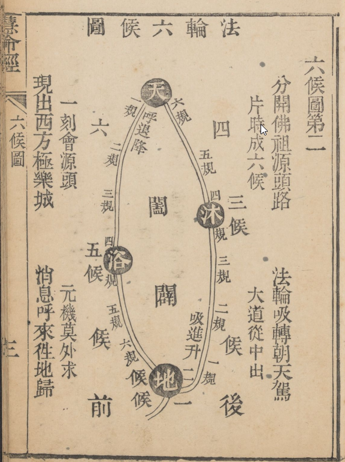
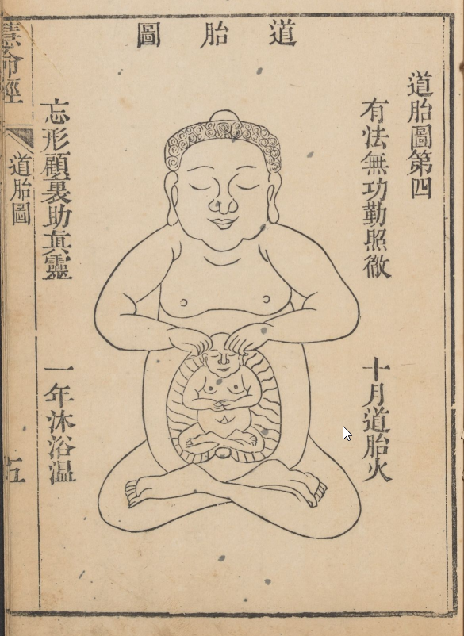
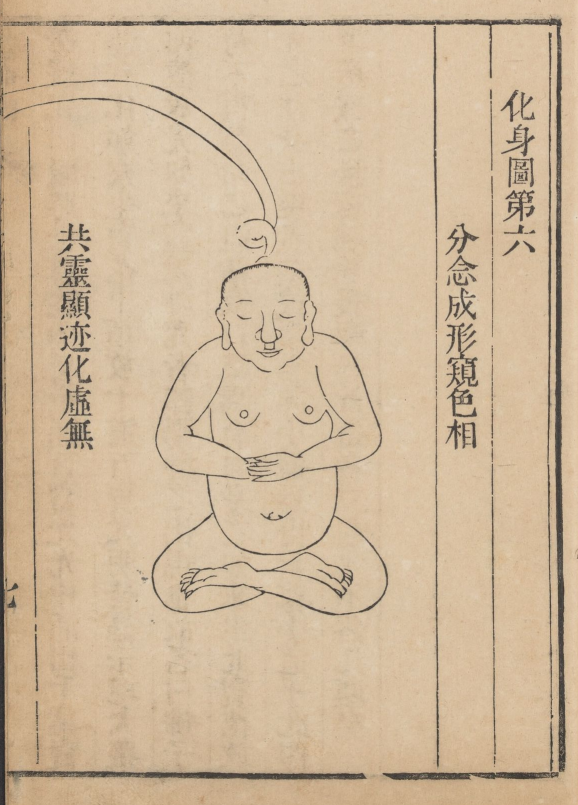
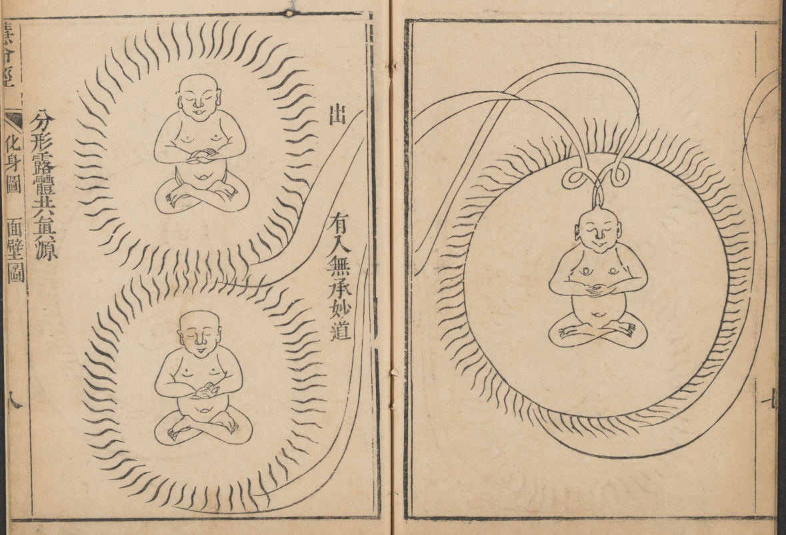
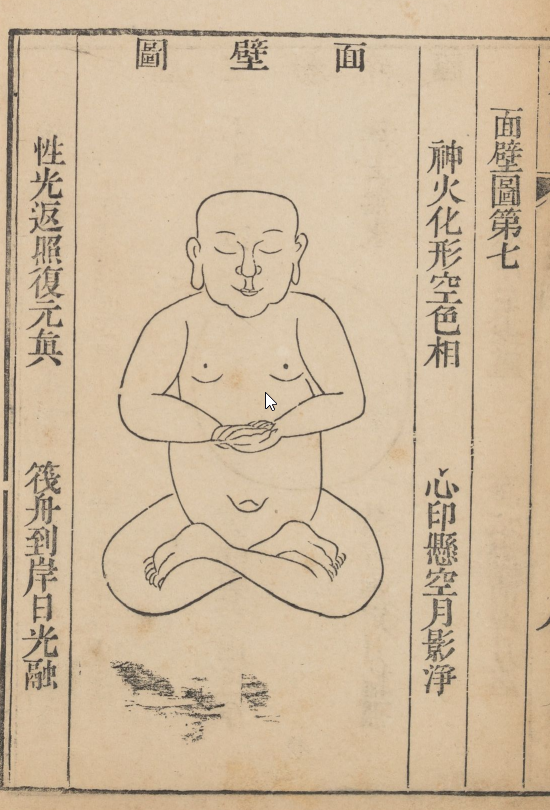

慧命經
柳華陽真人著
敘
生可必乎？自古無不死之聖賢；生不可必乎？世尊何以雲，能不死阿羅漢。《易》曰：「天地氤氳，萬物化醇。男女媾精，萬物化生。」又曰：「有男女，然後有夫婦。有夫婦，然後有父子君臣上下，而禮義有所錯。」故古聖人，於男女之際，謹夫婦戒容止，三致意焉，所以尊生也。而況為佛氏之教者，既以清淨慈悲為主，更當求不死之道，如阿羅漢矣。但其道，豈無所指授而能得哉！茲華陽和尚者，向有《金仙證論》一書。鹽官吳君，既悅其言而為之序。會予以署協篆，至皖城，又以《慧命經》索弁言。閱其目，自《漏盡圖》至《決疑》，凡十有四。其言曰，不識性命，則大道無所成，從古佛祖，莫不由性命為修煉。修者以破而補圇，煉者以火而化物；火非風則不灼，物無所則失居；是故至人參乎大道，修乎性命，風火與物並而同用。心腎相合即是性命合一。命者根於腎，腎動則水也。性者根於心，心動則火也。以火入於水中，則慧命不致外耗。以風吹火，變化而成真種。修真種而成舍利，此其大旨也。其中真實次第之工夫：有下手時，轉手時，了手時，撒手時等法。遵《楞嚴》之漏盡，表《華嚴》之奧旨，合諸經之散言，明此雙修之天機，不墮旁門，一片婆心，盡在此書矣。今而後，道成壽允，安知華陽之不如佛弟子，迦葉住世七百年而遇世尊；寶掌和尚住世一千七百十二年而遇達摩也。寂無禪師而後，非華陽，其孰能以淺近喻至道，以顯露泄秘理，而傳後世於無窮哉！予故樂得而為之敘，且付諸梓雲。
時乾隆甲寅冬初，庚辰科會元，欽賜探花及第，御前侍衛，誥封通議大夫，原任浙江黃岩鎮總兵官，誥封武顯將軍，署理安慶協副將孫廷璧敘。
自序
華陽洪都之鄉人也，幼而好佛，因入梵宇有悟，常懷方外想，見僧輒喜。一旦聞長者言，昔五祖三更時私授六祖道，側聽歡然，憬如夢覺，始知修煉家必賴師傳，乃尋求不已。足跡遍荊楚間，迄無所遇，後乃投皖水之雙蓮寺落發，愈加咨訪。凡三教之師，靡不參究，竟無悉慧命之旨者。因自歎曰，人身難得，遂此虛度乎？忽發一念，於每夕二鼓，五體投地盟誓虔叩上蒼，務求必得。閱及半載，幸遇合伍沖虛師，傳余秘旨，豁然通悟，乃知慧命之道，即我所本有之靈物。嗣至匡廬，又遇壺雲老師，竊聆論緒，知為非常人。勤懇聽受，繼以哀籲，師乃大發鴻慈，開悟微密，中邊奧竅，罔不周徹。及余臨行師囑曰，佛教雙修，今已斷滅，子當續其命脈，以度有緣。余隱跡江左，與二三道侶，焚修切究，因碧蟾瞭然瓊玉真元苦修，已成舍利，默契師傳，故纂集是書，命曰慧命經，畫圖立相，開古佛之秘密，泄師祖之元機，洵接引後學之梯筏也。餘見世之求道者，多宗語錄，而語錄中有實語者，有妄語者，彼下學不知如來慧命之道，誤入套語禪，終為下愚，轉受語錄之害。余通閱諸經，與師傳印證，有楞嚴華嚴壇經乃實語也。禪師語錄，和尚語錄，乃妄語也。夫修煉之道，非實語不足證真詮，非實語不足以辟虛妄。虛妄勝則魔障生，雖有智賢，無所從入。千百年來，慧命之道，深秘單傳，率難窺覺，今以淺率之言，將佛寶流傳，和盤托出，俾世之學者，睹此慧命經，即若親口相傳，只須勵志精勤，不必他山求助，則佛果可以立證，此餘若心求師悟道之本願也。
乾隆甲寅夏，湖口傳盧柳華陽，序於皖城忠潔庵中。
漏盡圖第一

蓋道之精微，莫如性命。性命之修煉，莫如歸一。古聖高賢將性命歸一之旨，巧喻外物，不肯明示直論。所以世之無雙修者矣。余之續圖者，非敢妄泄也。是遵楞嚴之漏盡，表華嚴之妙旨，會諸經之散言，以歸正圖。方知慧命是不外乎竅矣。且此圖之所立者，是願同志之士，明此雙修之天機，不墮傍門，方知真種由此而懷，；漏盡由此而成，舍利由此而練，大道由此而成，且此竅也，乃是虛無之窟，無形無影，氣發則成竊，機息則渺茫，乃藏真之所。修慧命之壇，名之曰海底龍宮，曰雪山界地，曰西方，曰元關，曰極樂園，曰無極之鄉，名雖眾多，無非此一竅也。修士不明此竅，千身萬劫，慧命則無所覓也。是竅也，大矣哉！父母未生此身，受孕之時，先生此竅，而性命實寓於其中。二物相融合而為一，融融鬱鬱，似爐中火種，一團太和天理。故曰先天有無窮之消息，故曰父母未生前，氣足胎圓，形動包裂，猶如高山失足，㘞地一聲，而性命到此則分為二矣，自此以往，性不能見命，命不能見性。少而壯，壯而老，老而嗚乎。故如來發大慈悲，洩漏修煉之法，救人再入胞胎，重造我之性命，將我之神氣入於此竅之內，合二為一，以成胎孕，其理一也。夫竅內有君火，門首有相火，周身為民火。君火發而相火承之，相火動而民火從之，三火順去，則成人，三火擬來則成道，故漏盡之竅，凡聖由此而起，不修此道，而另修別務，是無所益業。所以千門萬戶不知此竅內有慧命主宰，向外尋求，費盡心機，無所成矣。
六候圖第二

且道之妙用，莫如法輪；運行不蹊，莫如道路；遲速不等，莫如規則；限數不差，莫如候法。是圖也，大備法全，而西來真面目，無不在此矣。且其中之玄妙行持，莫如呼吸；消息往來，莫如闔辟；不外道路，莫如真意；有所起止，莫如界地。舍己從人，備著此圖，全泄天機。愚夫俗人得之，亦無不成也。苟無其德，縱有所遇，天必不附其道。何也？德之於道，如鳥之羽翰，缺一無所用也。必需忠孝仁義五戒全淨，然後有所望焉。而其中精微奧妙，盡在慧命經中，兩相參看，無不得其真矣。
任督二脈圖第三

蓋此圖於前二圖是一也，所以重繪者何為？是恐修道之人不知自身法輪之道路，故備此圖，以曉同志耳。蓋人能通此二脈，則百脈俱通矣。所以鹿之睡時，鼻入肛門，通其督脈，鶴龜通其任脈，三物俱有千年之壽，何況人乎！修道之士，既轉法輪，以通慧命，何患不長壽，而成其道業。
道胎圖第四

且此圖楞嚴經原本有之妙旨，俗僧不知道胎者，因當初未續圖之過耳。今以闡揚，修士方知如來有道胎真實之功夫在矣。蓋胎者，非有形有像而別物可以成之，實則我之神氣也。先以神入乎其氣，後氣來包乎其神，神氣相結，而意則寂然不動所謂胎矣。且氣凝而後神靈，故經曰，親奉覺應，二氣培養。故曰，日益增長，氣足胎圓，從頂而出，所謂形成出胎，親為佛子者矣。
出胎圖第五

楞嚴咒曰，爾時世尊從肉髻中，湧百寶光，光中湧出千葉寶蓮，有化如來坐寶花中，頂放十道百寶光明；皆偏示現，大眾仰觀放光如來宣說神咒者，即陽神之出現也。故曰，佛子。苟不得慧命之道，枯寂口禪，焉有自身，焉得謂世尊為小道乎？此即泄楞嚴之秘密，曉諭後學。得此道者，立超聖域，不落凡塵矣。
化身圖第六
 
面壁圖第七

粉碎圖第八

集說慧命經第九
華陽曰，成佛作祖，是本性靈光，不得慧命漏盡，不能了道，直入於如來之太空。
蓋本性靈光者，其名雖二，源頭則一也。在定則謂之性，定中慧照，則謂之光矣。慧命者，乃如來當初所取以示人之名也。是西方之梵語，中華人之本源，儒謂之先天炁也。是修佛之舟梯，作祖之權柄，即孟子所謂善養浩然之炁者是也。漏盡者，即世尊以示阿難所修之名也，亦是西方之梵語。中華曰走漏，儒謂之走精，醫謂之泄元炁。而漏盡即慧命之所化，當其未動之先，本是命也，及其動，而不知其修煉，出關則化為有形之漏盡矣。故儒謂之炁化精也。當其童真之時，堅固之體，原無漏盡之名。圓陀陀，光灼灼，此時若遇真師，不用漏盡之法。只要將此圓陀陀光灼灼之慧命，收歸中宮，時時醒悟，刻刻覺照，護持十月，道胎養成佛體，即楞嚴經所謂：既遊道胎，親奉覺應，功勤炁足，自然出胎。到此法身廣大，即楞嚴經所謂：形成出胎，親為佛子。此即謂之頓法矣。若夫十六歲以後，命寶滿足，足而自漏矣，從此以往煉至無漏，故如來謂之曰漏盡矣。世之學佛者，若不虛心求師指點火化之真訣，任爾打七參禪，長坐行持之流，萬無所保。既無所保，焉有道之可成成哉！故華嚴雲：不求此妙法，終不能成菩提。是以如來發大慈悲，示人下手接續添油之法，補足圓陀陀光灼灼之慧命，再皈中宮，此乃謂之漸法矣。故光明如來雲：老僧會接無根樹，能續無油海底燈。且又當勤勤修煉，非一朝一夕能成道也。故世尊謂阿難雲第一漏盡難成，而漏盡又是佛所喻之別名，乃此篇修慧命之法也。若修性不修命，習氣難消，縱然能到恢恢相，無非五通之鬼，不能契如來之六通。所以大佛方等大集經雲，修習五通，既修習已垂得漏盡，而不取證，何以故？湣眾生故舍漏盡通。乃至行於凡夫地中。太空者，法性圓之虛極也。故華嚴雲：性如虛空，即邵子所謂「道通天地有形外，思入風雲變態中」是也。
而慧命漏盡不得風火煉法，不能和合凝集，而成大道。
風者，是助火之烈焰。火者，是化物之能功。故如來雲：微風吹動。又雲火化以後，收取捨利。風火漏盡並用，自然和合凝集，而成大道矣。
是以佛法次第用工之真傳，豈無憑證。
且真實之道，則有真實次第之工夫，或如前後混雜，非如來之道也，乃旁門外道而已矣。且次第者，如下手時，有和合真種之功；如轉手時，有修煉舍利之功；如了手時，有溫養道胎之功；如撒手時，有出胎面壁之功等法是也。然而次第非敢妄論，是集佛祖第用功之秘文，攢湊逐節以為憑證，每句之下添一注腳，喻曉同志，概而證之則無所誤也。
妄以一言半句而為道哉。
如今之禪門，自己尚未得真傳，妄以化人。或曰父母未生前，或曰念佛是誰？這些婆婆媽媽之百語哄弄世界愚夫愚婦，東問西尋，謂之參求佛法，到頭一場空老，何足為道哉。志者觀之，真謂之老婆禪、口頭禪、是非禪、皮殼子禪、衣食之禪耳。
且千古至今，莫不以盲引盲，坑陷無數之善信，深入九泉，竟不能出頭見佛之光華矣。
蓋佛法自漢明帝始人中華，前秦始皇卻有佛僧來，始皇送還不用，由漢以來，謬妄莫知其數，幸遇達摩來此土，以證其非，單傳大代，自六祖至今，非上又非，謬外更謬，所以有九十六種外道，二十四觀之傍門，獨有打七一門，是害人之毒藥，埋人之火坑。釋教西方二十八祖，東土六代原無此門，乃高峰門人誣捏，況高峰所習乃是閉息之傍門，非如來之正道。或問曰，何以見得也？答雲：高峰自曰，忍餓壽昌金粟是也。但看打七門人，個個吐血，不但不成大道，反得勞症，苦惱而死，豈不痛哉？是人身氣血脈絡尚且不知，焉得知其道乎？夫人身日間勞倦，全靠夜靜安神，以待後天心腎交和，為滋養此身之根本。苟教人七七晝夜勞倦不睡為之大道，安有不得其症者之害也。醫曰：凡人七夜不睡，則心腎不能交，必得勞症，何況七七乎？又加打其脊絡，傷其臟腑。嗚呼！此刑自唐帝解之後，至今不敢妄用矣。帝當初見受此刑者，十有九死，閱諸醫書，謂人五臟俱有脈絡，系於脊之總絡，以通其氣血，為運行養行之本。一打此處，即阻其氣血，逆而上行，就是盧醫、扁鵲，莫能救之。故解其刑，以杖臀為之責也。又或以黃綣之上，續某僧某僧之名字，謂之傳法，以假傳假迷惑世人，坑陷初學，又加口頭禪之語錄，遍滿世界，縱有勵志者，無所覓求。以為佛祖是皆天生，亦以虛勞空死，如此將佛之光華，竟變為黑暗矣。
蓋大藏之法寶，本是全旨，奈因當初學者有淺深，根有利鈍，遇此前後混雜，實不肯成其逐節之次第也。
且大藏之教，有權法，有實法，有無為法，有有為法，豈可一概論之，是在人之學與不學耳。所以然者，性命雙修之道，即在其中矣。
而後來諸祖，所得以成者，亦不肯並泄而同論。
且後來諸祖有所得授而成者，不肯公同大眾，以權法制伏俗僧，謂其悟性，免其多事而生別念，實法有悟知者，私付密授，故為教外別傳，只通消息。如世尊不傳堂弟阿難，私付與迦葉為二祖，如五祖不傳首座神秀，私付與待者盧能為六祖，是以成佛作祖之大寶，豈傳無志之人。必要有超乎佛祖之志氣，知曉那邊道理，方可付之。故佛法之秘，宜世所難問也，是以不肯並世而同論。
或顯於無為，而隱於有為。
無為者，是養道胎面壁後半之法，非今之俗僧，以枯坐之無為也。其有為者，即凝集和合，修慧命前半之法。有憑有據，乃先天意炁之妙用，非世間之有為也。故寶積經雲：一切諸法，悉如幻化，是中卻有一法，和合凝集，決定成就。又經頌雲，大士修行解脫門，轉益慈悲求佛法，知諸有為和合作，志樂決定勤行道。又經雲，所謂二乘，墮於無為廣大深坑，不能超脫證果。古德雲，有為雖偽，棄之則功行不成。無為雖真，趨之則聖果難證。今之禪門，聞之有為，謂之著相，棄而不取，殊不知此有為，乃定靜之中妙道之有為也。譬如天地是個無為，而天地所以生萬物者，是個有為矣。則最上一乘之佛法者，亦然。而人之心能到無為之時，則內裏有一物，超然而出，若不以意取之，此物豈不散於外境，即非我所有矣。如此取皈之法，故名之曰有為法矣。即六祖所謂往北接度者，是也。
或顯於無物，而隱於有物。
無物者，乃後半之性功也；有物者，即前半之命功也。今之假禪道，聞之有物，莫不厭之，殊不知此物者，道之根本，法之津梁，人人本有，即非思慮之物，乃元關內之物也。故六祖雲：吾有一物，無頭無尾，無名無字，無背無面。又付大師雲：有物先天地，無名本寂寥，能為萬物主，不逐四時凋，乃先天之物也。宰育後天，散則無形影，聚則成舍利。故圜悟雲：何物高於天？生天者。是何物厚於地？育地者。是何物寬於虛空？包虛空者。是何物超佛越祖？植佛祖者。是乃化育之本，物我同途。故曰：物我同一大父母者，即此也。順去生人生物，逆來成佛成祖。順去則物我同知，逆來非師莫能曉用，故雲峰禪師雲：有物密救人，怎奈人不知，即先天純陽至剛之炁也，散之乃在一身，促之即在玄關。故寒子云，可貴天然物，獨一無伴侶，覓他不可見，出入無門戶，促之在方寸，延之一切處。你若不信受，相逢不相遇。大則包藏法界，細則粟米微塵。所以雲峰禪師雲，蓋天地撮來如粟米粒大，雖然如是，先必須和合凝集，而後有物。世尊謂之菩提種子，法華會上龍女所獻者，即此物也。
或顯於無事，而隱於有事。
無事者，是祖師所制伏眾之法耳，乃小乘法也。有事者，祖師隱藏密授，乃上乘法也。無根凡夫，不能信受，故世尊雲：我於五濁惡世，行此難事，得阿耨多羅三藐三菩提，為一切世間說此難信之法，是為甚難。又雲，世尊如此之事，世所難信，而祖師若與下根之人說破，返生非言。故法華經雲：爾時佛告舍利佛止，不須複說，若說是事一切世間諸天及人，皆當驚疑。又雲，唯此一事實，餘二則非真。且有事者，又非旁門之事也，慧命即元關機動物產之事矣。以我之意宰之，以呼吸收之，和合真種，轉運法輪，採取薰煉，總是意同呼吸用慧命矣。故名之曰有事者也，慧命即元炁之別名。元炁生時，若不收取，豈不散耶！故興陽禪師雲，進一步則迷理，退一步則失事，即此也。
或顯於小乘，而隱於大乘。
小乘之法，乃禪師所施之權法也。曰參撣打坐，曰念佛看經，種諸善根之因果。大乘之法，即祖師受記之密語也。曰慧命壽命，曰漏盡馬陰，是超凡入聖之佛果，此以上言之大概而已。
或有言之易而喻之淺者，當逐節以熟玩，不可冒視也。參悟無疑，再求印證，使徒執其偏見，取宗於妄人之口，何其誣耶。
淺易之言，即性命之真方。未得訣者，難以晚悟，必須前後湊合，究竟層次，再求真師印證，免誤此生之空修也。若今之叢林所傳所證者，非如來之正法，乃黃綣上所傳某僧某僧之名字，謂之佛法，若認則誤也。此乃六祖之後未得真傳者，妄人所捏爭方丈之計耳。哄弄後學，誤了多少善信，既非佛法，乃爭訟之端也。
餘故曰，脫俗離塵覓過知，
古雲，欲往山下路，且問去來人。過知者，是得決之人，或已成，或未下手，然而其訣則一也。
斷淫悟道貴真師。
且斷淫者，即楞嚴經之首戒，成佛之津梁，苟為釋子，袈裟錫杖，不斷淫機，謂之修道，豈不取笑儒道之高人乎！外面雖威儀，內裏與物無殊，真可恥矣。且斷淫一事，若不求真師，將何法斷之？凡求師者，先問此法起首，餘此俱是旁門也。
任他指說萬般法，與我身心難自規。
今之釋教，無非看經念佛，參禪打坐，打七問話頭而已，除此之外，無所為也。此乃黃葉止小兒之啼，與我身心有何益乎！
格外高談非至道。
今之學佛者，不得正傳，開口便曰某菩薩某佛祖，自己無能，將此婆婆媽媽等話，哄弄愚人。又曰，某僧死已得道，某和尚死已得大道。若教死已得道，天下死屍儘是得道之漢。殊不知得道者，在生能為無所不有之變化方為至道矣。
片言暗點是良醫。
片言乃老實之話，非文字之長篇，亦非花言巧語，故五祖所謂師師密付本音。暗點者，如五祖三更點與六祖，如世尊在舟點與迦葉，凡得其道者，疑病盡祛，藏教之經文，無不通達，故曰良醫矣。
得來暫試從頭看，一刻工夫果自喜。
既得真訣，且從下手修起，如果若是其道，淫根一萌，以心凝而宰之，以呼吸而吹之，不要一刻工夫，淫根自縮，意炁自合，心靜身爽，果自暗笑矣。
抑聞之《心經》曰，現自在菩薩。
華陽曰，此乃如來天恩教人起手雙修性命正法之切境，奈何凡夫不得真傳，便謂以念觀念，謂之觀自在菩薩則錯謬矣。殊不知此念，乃緣習所有識種所結，非道之本源，故程子所謂正道定理，果是心乎？抑非心乎？此所示人另悟消息之至矣。夫現與菩薩，乃如來妙喻二物，雙修之嫡旨，何得一物也。若此念謂之道，則道遙矣。故圓覺經雲，一切眾生，妄認四大為自己身相，六塵緣影為自己心相。又元妙宗一雲，靈台智性，這個是生死根本，妄想緣氣，只因前塵而有分別。故傳法如來曰，空王殿內無蹤跡，若認為真實，則菩薩依舊埋藏九地，不得出頭變化，成如來之妙相，空費此生一大因緣矣。且此乃心中之陰氣識神之變化，萬劫千生原是他，攝裏菩薩，迷弄往投貪塵愛欲，不得解脫，所以不得證果。轉劫迷失，皆因不知菩薩出處，妄認此識之誤也。故景禪師雲，學道之久不識真，只為從前認識神，無始動來生死本，癡人喚作本來身。又南泉禪師雲，心不是佛，智不是道。馬祖又雲，即心是佛，乃止兒啼也，豈不懼哉！且今之學佛者，聞之心不是佛，智不是道，豈不落空亡，茫然無主哉？問曰，何所修煉，答曰，觀乃我正念中之靈光耳，未得真傳者，謂之本性。且菩薩住居淨土，二物所隔八寸四分，遠非觀莫能相會，即下文所謂和會凝集，決定成就是也。而菩薩既是慧命實謂之佛性，自離母腹，㘞地一聲之時，觀與菩薩，兩目睽隔。且菩薩隱而深密，若不求師親指，縱有聰慧靈悟，莫能見之。所謂道心惟微，自此而往，晝夜謀務，聰明智慧，無不是識神用事。故祖師雲，汝無佛性，所以如來發慈悲，教大地眾生，時時刻刻觀照此菩薩。菩薩所得受此靈光之慧力，久則自然如夢覺，融融然似薰蒸，活活然如盆珠，豁然靈惺，放大光明，力足時至，忽然一湧潮上，與我識性合而為一，到此識性死，而佛性靈顯，靈靈當當，依舊是個主人，光周沙界，六通俱全，任他塵塵垢垢，我獨安然一性，圓融太空，所謂一切含靈，俱有佛性。雖然如是，順去生人生物，逆來成佛成祖。凡聖之變化，總是這個所謂一物一太極，有此太極，知覺言語，無此太極，眼垂口閉，醫謂之真火，實無形無影，而藏之臍後腎前，稍下空懸一穴。古謂之淨土家鄉，極樂國，妙有真空。有此真火蒸薰有形，無此真火息斷形壞。六祖所謂，心是地，性是王，王居心地上，王在身心在，王去身心壞。然此心又非肉團之心，乃道心也。故曰，道心居於北極，是眾星拱者，即此矣。天下學佛者，不修此菩薩，而另外別有道可修乎？若有所修，盡屬傍門外道而已，呂非觀自在菩薩之道也。
《寶積經》雲，和合凝集，決定成就。
此乃世尊之密語，大藏一教之秘文。即性命雙修之法寶。故曰決定成就，奈何此道自漢明帝至今，並無一人宣講，獨有達摩寂無二祖師密受，故肉身俱已變化，親登太空，允證金身。達摩微露，而寂無著諸經典，闡揚此道，奈門人藏閉其書，余今解明備全，願同志者，概而證之，免墮傍門，得疾病而夭死，早成乎大道矣。夫和者，乃心中之陰炁，去和腎中之陽炁，陰炁得此陽炁，則有安心立命之所，故曰和矣。合者，是腎中之陽炁，承受心中之陰炁，陽炁受此明炁，則成斂收堅固之體，故曰合矣。易經所謂一陰一陽之謂道，偏陰偏陽之謂疾。古往佛祖必須性命雙修，不曾偏枯。且凝者，是凝神之法；集者，是集命之方。命不集聚，不成菩提。即孟子所謂集義而生也，此乃性命並修，養神養炁簡而易成。但人不知雙修，故如來曰，和合是也。且人自離母腹，神則不能顧其炁，炁不能顧其神，神藏於心，發於二目，而七竅共用，是逐日而上耗，炁藏於腎，發於淫根，夜靜而下耗，稟受能有幾何能？耗盡嗚呼！若不求師指點，凝集縱修，無非此心中一點陰神耳。殊不知此神乃純陰不能獨力成乎至道。故世尊教人二六時中，行止坐臥以念收斂微細之神凝入於命中，命得此神，猶如臣得君主，拱伏自定不敢私自偏枯外耗，如此用工，再加曉悟後面採收陽生之法。少年不過月期，中年不過三五月，則命竅之中，不覺無中生有，莫知所之。忽然真機發動，其快樂之妙，不可以言語形容，到此當自保守速轉法輪，故如來還世人一個當頭，汝等若依我此和合凝集之法修煉，決定成就矣。
《六祖壇經》曰，有情來下種。
蓋情者，乃修慧命下手一著之天機。若無此情，萬不能成佛果。譬如農家無種，欲望收成，豈不愚乎！今之禪僧，不得成佛者，實不知此情之過耳。昔日五祖先世為栽松道人，所求四祖之道，四祖視其形骸，老而無情，乃謂曰，汝轉一轉來，道人果自立亡，轉而自投周氏，再得正道。且道人既可立亡，不用父以自投懷胎，足謂之道矣，而又求個甚麼。馬祖雲，不是物。又六祖曰，淫性即是佛性。其二者泄盡天機矣。故龍牙禪師雲，人情濃厚道情微，道用人情世豈知，空有人情無道用，人情能得幾多時。且此一情字。自漢明帝到今，注者紛紛，苟不得慧命之法，便謂此情乃世情之情，學兩句套語機鋒話頭，謂之得道，哄弄愚人。萬世之下，明眼人見之，可取笑矣。既然是壞物，焉得五、六祖當時習而哄後人乎？蓋五、六祖乃如來嫡傳，慧命之道閉而不傳與無德者有之。或問曰，此情是個甚？華陽雲，此情乃慧命之化育，即元關頓開之機緘，其慧命雖藏在元關，靜則發生往外，附與外形而起，與我心中之意，偶有知覺焉，是以外形與動則謂之情也，故閉陽關法。如來曰，不識動靜學道無益矣。又問曰，何謂之下種？答曰，此情乃生入成佛之順逆，造道之端，非真意不能逆歸，凡學佛之上，既曉形動之機，將我靜中之真意凝入於命宮，時來時凝，久則天機發動，不覺命宮產出菩提。故曰下種矣。又問曰，何所修煉？答曰，既知凝法，當知煉法煉者，火也。火非風不能焰灼，亦不能化物。故世尊雲，微風吹動。又雲火化以後，收取捨利。凡學之士，必當使呼吸之風，逆吹命宮之真火，即將所發生往外之慧命，以息攝回本地，凝凝然似爐中之火種，綿綿然如風箱之往來，薰之煉之，使有形化而為無形。知而修煉，不但本宮慧命不外耗，返得此動機，補助我之慧命之不足處。即儒所謂造化，生生無窮，久則命基滿足。又謂之壽命不死矣，故如來度迦葉，謂不死阿羅漢者，是也。
又，《摩訶般若波羅密多心經》曰，時。
蓋諸經之句法，都有雙意數字，獨此曰時，豈不怪哉！此乃如來囑咐後人，醒悟時之至切至切矣。且時者，又非時候之時也，即禪靜中萌動之時矣。古德雲，若言其時無定時，清風朗月自家知。儒雲，月到天心處，風來水面時。諸翁雖然妙喻發其天機，卻總不肯說出是個甚麼時來，且教人將何所用乎？余不惜罪過，與諸人通一線，免墮傍門，早證道果，豈不妙哉！夫時者，即吾身中慧命自動時也。古德謂之活子時，其生之機，形如烈火，壯似焰風，非師傳授意，息莫能制伏。別名猛虎專吞人之性命，吸人之骨髓，任他三教英雄豪傑，不得真傳者，無不被他所喪矣。古之志士高人，必先伏此猛虎始得成其道果。然而其發動之形容，薰薰乎如浴之融暖，烈烈乎似火之將熾，一派壯旺強烈之性，薰蒸下行於淫根，威鎮獨立周身之精華，無不聽令於他，醫家謂之外腎。與成怫作祖之妙訣，即在此下手矣。若得真傳何必又疑惑哉！且時者，釋教之秘也，至切矣。
世尊曰，於竭陀龍宮說法。
上文一節言時所用之實處，無不在其中矣。又恐世人落空，故此專言真實之所，使人下手則不落空矣。蓋龍宮者，西天梵語之譬喻也。中華名曰丹田，又曰炁穴，醫曰精竅，其名亦多。西天又曰淨土，曰界地，曰苦海，曰海底，曰極樂國，曰優陀那，其名眾多，總是和合真種之處也。所以天臺止觀雲，梵語優陀那，此土丹田，是也。故近代得道者，恐人不悟，又曰爐矣。此乃祖師慈悲示人切近之妙喻，使人知有實所。譬如鐵匠，欲成鋒芒美器，非爐莫能成功，修煉亦複如是。蓋爐何也？化形成物之所。其法易明。故心經解雲，收來放在丹爐內，煉得金烏一樣紅。光明如來雲，爐中火發。又雲爐中發火泄天機，不悟西來即是迷，是也。
圓通禪師曰，北斗裏藏身。
北斗即上文龍宮是也。藏身即前文凝集是也。祖師教人常將我之真念，藏於北斗則心自空，命自固矣，故付大士雲，心空及第歸，是也。
寂無禪師曰，凝神收入此竅之中，則炁隨神往。自然歸於此處。
且寂無得如來達摩之全旨，慧命之嫡傳，故能隱顯莫測變化無窮。雍正年間，屢在太邑，化陽身數十，家家有個寂無，談笑飲食，隱則無蹤，或與人金銀美女，或顯虎獰水火，從學之徒，凡心慾念，無不消焉。蓋凝者，移也。竅者，即丹田也。亦曰爐矣。此表炁之所發，當用功之時也。蓋炁之動附於外形而出，若任其出，將何為道本哉！所以祖師示人，此時速凝神入於丹田，炁得神之翕收，則炁亦歸矣。且此炁者，又非呼吸之炁，乃先天之炁也。即孟子所謂浩然之炁者矣。此炁自我釋教，諸得道之宗師，不肯洩漏，儘是譬喻外物，使人自悟。有明白者，然後密付，故曰教外別傳，炁之別名。釋教曰柱杖，曰錫杖，曰禪那，曰摘蘆，曰白雪，曰金蓮，曰敬果，曰洞水，曰海水，曰明星，曰西江水，曰曹溪水，曰水牯牛，曰海底好，曰爐中火，曰牟尼珠，曰海底泥牛，曰海底明珠，曰海底開花，曰爐中香煙，曰事，曰物，眾名紛紛不可勝計，究其實事，無非此一炁也。故黃葉禪師參求六祖，得修煉功圓之時，自嘆惜曰，道無非炁也。此一言泄盡天機矣。
又曰，功夫不間斷，息息歸此，或一月二月便能自覺竅中融融，暖炁旋動。
息者，呼吸之氣也，佛喻之風矣。亦名柱杖，猶如老年傍杖而行。修慧命者，若無此息吹噓，漏盡不化，舍利不成。故禪師雲，未到水窮山盡處，且將作伴過時光，是也。蓋人呼吸之氣，原根本在丹田，但人只知出，不知進耳。得真傳者，丹田之神，能以接息。故禪師雲，無孔笛，顛倒兩頭吹，才得神炁相合，人則自暖。法輪自轉一月二月者，年老年少之分別耳。少年月內，爐中自有效驗之機發，年老或數月有方有渾合之信至，暖炁才有動機。
淨光如來曰，金童一惺棄皇宮，不覺犀牛法海中，欲要覓他歸故里，靈山塔下始知蹤。
太子即世尊也，世尊思修，有天神變白馬，乘太子出皇宮，騰空而至雪山，自金刀落發，先未得真傳，以修傍門，所以漏盡無成。形骸尫羸，後得阿私陀以傳慧命之正道，始成佛位。故法華經雲，仙人授佛妙法，如來因之遂致成佛。又釋家譜雲，私陀見太子形骸尫羸，謂太子曰，可食牛乳，複其本元。太子果食其乳，依然複其三十二相，道果圓滿，以求燃燈佛證之。世尊初下功夫修煉至道，不待以數月期，忽見明星，自歎曰，一切眾生皆有佛性，奈何不得斯道之過耳。世尊言佛性即慧命也。牛者，炁也；海者，即丹田也，欲覓此牛，其藏處在法海，他所則無矣。故曰，北斗裏藏身。靈山，心也；塔下，即丹田也。如來教人修道，先修塔下，而後有牛來歸故里之效驗矣。故藏經曰，人人有個靈山塔，好向靈山塔下修。知蹤也者，丹田之內，忽然無中生有也。不待他論，自意念中覺知融暖和暢，一派春景。其樂無窮，即馬祖所謂達於皮毛，暢於四肢矣。歸者，還也。故里者，心田也。始由下中歸上，化識性為佛性，煆習念成正念，識死性現，朗朗一個主人，故曰，歸故里者也。
圓通禪師曰，群陰剝盡，一陽複生，欲見天地之心，須識乘陰之法。
群陰剝盡者，在年十一月，在人身為北海。一陽生者，在年為冬至，在人身為陽生，天心即陽生之所。邵子所謂冬至之半，天心無改移是也。欲見此心須求煉法，而後有可見之臉見，乃真種所產之法，即世尊見明星之見也。
《楞嚴經》雲，願立道場，先取雪山大力白牛，可取其糞以泥其地。
且喻道場者，乃修佛道之起手也。闡牛糞者，即是煉慧命之根本矣。世尊教人修道，先修慧命，若不修慧命之純陽，起手單修心中陰神，安有不遭楞嚴經陰魔之類乎！如今禪門修性而不修命，往往顛倒反得疾病死。雖然口稱頓悟十地三乘，往往到頭虛老，不知雪山白牛糞之美處，空以磨磚作鏡，妄以集雪為糧，誤了多少年，既無立命之基，安有性道可成之理乎？是以戲臺上優人，自稱漢高祖楚霸王矣。蓋雪乃白也，白為西方之正色，是喻人命竅之炁也。故如來教人修西方極樂也，即此矣。而良醫又明指之曰，兩腎之前，空懸一白圈，先天性命水火即在其中，無形無相，空空蕩蕩，慧命即在其中矣。若不速自修煉，焉得久居，奔名利而耗散，逐色慾而喪真。出家之人，念誦枯坐，則離氣耗神，是油幹燈滅，不到半百而亡。故曰雪山矣。且命即元炁也，炁之剛而無比，色之白而無瑕，故曰大力白牛矣。炁之隱顯，包乎天地，載乎萬物，廣而無際，細而無核，覓而無影，修而現前，超佛越祖，無不是此炁也。即孟子所謂至大至剛，豈謬言哉！然而炁之變化，年壯而自拱，靜極而自生，不知保守，則以耗散。故曰糞矣，耗散朝朝如是，不早築固命根，能有幾何哉！即儒所謂用之則成路，不用則茅塞也。蓋糞乃劈魔之至寶，成佛之階級，不取糞而修，則十煉九空。譬如世人慾起美屋，非其基地，安能居哉？且古之志人，知此糞之出處，靜時而養，動時而取，收攝還我本地，用火薰煉，築固自己基址，則謂之泥道場矣。既有場基，又不可少善知識，時時刻刻，將我之真意坐居其中，一念不起，八風安能搖動。即康節所謂，一念不起，鬼神莫知不由乎？我更由乎？誰獨獨惺惺，任他千魔百怪，我在這裏隱身，安然自在。故曰和尚坐道場，則不遭魔類矣！即阿難所謂，坐於流水面跏跌，入滅是也。此篇注者作者同一鼻孔出氣者矣。
《楞嚴經》又曰，必使淫機身心俱斷，斷性亦無，於佛菩提斯可希冀。
且自古得道者，莫不先斷淫機，而後能超佛越祖，世之為釋子者，身心斷淫之說，無不知之矣。獨有淫機一字，舉世罕知，不但不知修煉之法而所以然者，身心亦不能實使其不淫也。何以故？淫機一發，形如烈火，速似焰風，苟不得其法，安有不牽連身心之憂患也！且若無其機，身心安然無所憂患矣。故世尊知其機之利害，難以自了，是教人以使之。且使之者，非空使也，而必有使之法焉在矣！故蔡禪師雲，祖意如空不是空，靈機爭奪有為功，且此法至簡至易，非夙有善報者，立面難聞，既無所聞，淫機焉有自聽者哉？若不迅早虛心求師，任爾千修萬煉，難免其患。所以近來叢林多有業障，善知識者，不得其法，多有私下身前後行淫，故畢書二大人將此等僧充軍問徒，是天譴其罪矣。問淫根何物也？答雲，淫機即世尊所謂淫根也。根之形在外，而機在內，不知修煉，焉有不牽連身心乎！即孟子所謂炁亦能動志之說。問曰，有何法制伏？答曰，得訣者，其機之將發，以神主使，其機自息。即盂子所謂志者，帥也。以呼吸攝之，使其炁之自歸。即達摩所謂採取也。神即為火，息即為風，機發雖是炁，而內實有漏盡之資，若不在此鍛煉，則又牽連身心矣。以丹田為爐，以闔辟為箱，以火而煉，以風而吹，以暖信為效驗，以暢快為無事，久久鍛煉則機自死，淫性自斷，斷性亦無身心太平。三種淫事，無所集有，於佛菩提何難冀也。此乃萬聖於祖不傳之秘法，餘今盡泄矣。為釋之子不修三種淫事，自謂善知識者，即《楞嚴經》五十三種之魔矣。又或謂餘之錯矣，後學者且當本文證之，世尊豈有錯乎！
寂無禪師曰，其機既發，凝神入於丹田，當用武火收攝而歸，以薰以煉，機之未發，以神照之丹田。當用文火，不離而守，以烹以蒸，似此悟人，才得真神發生。
且機之發者，乃丹田之炁動也，既然凝神則此機動，受神制伏，自然兩不相離，如磁石之吸鐵，隔礙潛通，和合為一矣。祖師又恐臨時炁之生旺，猛虎難伏，故曰，用武火，此真乃泄盡天機，慈悲至已盡矣。萬世之下，學佛之士，無不沾恩矣。蓋用武火者，乃修道之密法，成佛之秘機，佛佛心受，祖祖口傳，悟且甚難。故五祖雲，師師密咐本音。世尊達摩雖有火化風吹候之言，而文武之用度，未行竹帛，故世之無雙修，而亦不能信，自達摩寂無後，無有神形俱妙之高僧矣。問曰，何謂武火攝歸？答曰：武火攝歸者，乃呼吸之氣，攝真炁歸源，而又離不得真意之為主宰矣。故曰，一意馳二炁，鼓舞攝歸，總在乎意之能耳。蓋炁生易下流順出，故以呼吸攝之。若不惜呼吸消息之鼓舞，則一神而難攝，炁亦難歸。二炁原有兼用，故禪師雲，你有個往杖子，我與你一個柱杖子，即喻此二炁同用之機也。當呼吸之機，我則從陽蹺迎歸爐。即達摩所謂採取也。或十迎，或數十迎，外形倒則止矣。合明此二炁闔辟之消息，則元炁自歸爐矣。用二炁之時，爐中之意，不著於呼吸，依於元炁採取，不過借呼吸之機，以為採取之具。即六祖所謂往北接度是也。且元炁既歸護，又當薰煉，以意定而為火，以息噓而為風，鎔灼一時漏盡之資，則盡化而為炁，放心安容，此乃武火之功也。問曰，文火何也？答雲，文火者，不存而守，不息而噓，時時刻刻不昧，惺惺綿綿不斷，息息歸爐。即古德雲，杖往杖來無間斷，舍利成全合本初，切忌昏迷散亂，一念不起，一意不散，猶如爐中火種，如此修煉，何患真種不生，舍利不產，大道不成哉！
釋家譜世尊曰，對鬥明星而悟道。
對，即中華，名曰返觀是也。鬥即北斗，喻丹田是也。明星者，乃丹田之炁發晃是也。正是真種所產之景，所以興陽禪師雲，匝地紅輪透，海底不開花，即此矣。
圓通禪師曰，北斗藏身雖有悟，出塵消息少人知。
北斗藏身者，是藏種在此，而起手若不在此而修，則不能出塵矣。凡出塵者，即轉法輪之消息，當轉而不轉，則種子產而無歸，又廢前功，即興陽所謂，退一步則失事。故曰出塵消息少人知，此以上儘是言和合其種之法。
此上數者，慧命經之妙法，和合真種之天機，具在斯與，而其風火之功，亦不外是矣。
此總結上文和合真種風火之法。古聖不肯全露，故人難悟大道，盡入歧路，余淺直解明以曉同志，庶不誤入外道，早成正覺，有好佛者，果潛心此經自修自證，以成大道，豈不樂哉！
予故曰，自始凝神返照龍宮，渾然而定靜，以雙忘而待動，以意炁而同用，以神火而化，以急風而攻，以武而煉，以文而守，久久薰蒸，刻刻無間，意炁兩不相離，則和會凝集之法得矣。
此總序和合所生真種之法，蓋龍宮者，遵如來之梵音，此土名曰丹田。丹田之內有水故曰龍宮，水性沉重，朝朝下流。神即是火。火性輕浮，刻刻上焰。世人沉下浮上，兩離分散，故不能成其道。佛祖以火凝在水中，則心自空火不焰上，水得火煎，水不下流，化而為炁，炁則自然上升。當凝神之時，內念不出，外念不入，空空蕩蕩，不著不滯，回光近照，既照則忘形忘意，但用意即是不忘，但忘即不能以意照之，心無不存之謂照，欲無不泯之謂志，忘與照，一而二，二而一，當忘之時，其心湛然，未常不照，當照之時，絲毫不立。未常不忘，忘照純一，渾然定靜，天地入我，莫知所之。且待而候動，不覺融融和和，外形勃起，以意迎炁而歸。既歸本地以神註定其中，當以呼吸吹噓，久則文火，勿忘勿助，行住坐臥，不離這裏，何患真種不產哉！
不聞得道古儒之言乎？恍惚陰陽初變化，氤氳天地乍迴旋。
此以下言真種所產之時，古儒即邵康節是也。子之釋教，竟有無知無識者，謂儒不知大道，自打七參樣，口頭三昧，謂之得道，誠可笑矣。不但儒聞而不視，高僧亦自夾鼻恐臭矣。蓋憂惚者，靜定之中，渾然一團，外不見其身，內不見其心，恍恍惚惚。初變化者，即此憂惚之間，忽然不覺融融和和，如沐如浴，故寂無禪師雲，六合同春。乍者，即興陽禪師雲，匝地紅輪透。迴旋者，真炁旋動，正是元關透露，而真種產矣，有無窮之妙樂也。
《六祖壇經》曰，因地果還生。
地者，名淨土，又名苦海，又名優陀那，巧喻異名，無非果生之處也。蓋果還生者，因以前能明有情來下種，和合之機，到此方有果也，即菩提子也，又曰舍利子。
無量光明如來日，分明動靜應無相，不覺龍宮吼一聲。
無相者，釋自威音，儒曰無極。蓋此物本來無相，因靜定而生。龍宮者，即上文因地是也。吼一聲者，即上文果生也。儒曰，杜宇一聲春曉，乃陽炁之所生也。能知此一聲之機，則洞水可流，西江可吸，海水河灌頂也。古德雲，地雷震動巽門開。又雲，雷從地響美。
紫摩金光如來日，海底泥牛露半形。
海底即我之丹田。北海也，世尊名之曰龍宮，又曰恆河。興陽禪師亦曰海底，是藏慧命之源窟，故曰海也。泥牛者，即慧命也，世尊名之曰摩尼，即我身中神炁和合所煉成之真種也。露半形者，乃真種將產之法象也。此時必須以靜而持之，不可急於收取，任牛之自露全形者，方可興功，不然念動牛驚，依然隱而無蹤。圓通禪師雲，必須元竅生物，斯可以陽爐發火，固莫為之先，亦莫為之後，謂太早生。故寂無禪師雲，若夫機未至，而先助長，則外火雖行，內符末應，適自取焚驅之凶矣，奚可哉！
圓通禪師曰，梅花未發太早生，梅花已發太遲生。
梅花者，乃陽之道，而為報春之信也。即喻我身中陽炁所發之景矣。末發者，是喻陽，將動未動也，此時如或妄采，而炁嫩則不升，故曰太早生矣。已發動者，是喻陽炁已動也，此時即當收歸源。若不歸源炁則散而無依，故曰太遲生。圓悟禪師雲，進一步則迷理，退一步則失事，誠所謂也。
又曰，恁麼則風霜都契盡，獨佔普天春。
恁麼者，即喻時當今也。風霜契盡者，是喻無陰氣之謂也。春者，陽也，是喻丹田一片純陽之炁。其中景象如沐如浴，周身融和、暢快不可勝比。內外儘是陽春，乃真種所產之真景也。
又曰，切須盜著。
此乃祖師囑咐後人，如或見此景至，即當興功收取，如或不收，則是當面錯過，此物又行熟路。故興陽雲，退後則失事，誠有言也，豈不悟哉！故曰盜著。盜者，強奪也。當此之時，切須勇猛，以我之意宰之，用我之息攝之，將此真種，歸於丹爐，而後再用法輪之功。
寂無禪師雲，至於六合同春，物物得所。
同且六合者，周身也；春者，喻周身之暖信也；物者，乃釋教之別名，即儒所謂元炁也。功到時至，此物當產之時，不知不覺，忽然丹田融融洽洽，周身酥綿快樂，春生毫竅，身心無主，丹田暖融，漸漸而升，陽物勃然而舉，忽然一吼，呼吸頓斷，心物如磁石之相翕，意息如蟄蟲之相含，不覺入於恍惚，天地人我，莫知所之，渾渾淪淪，又非今之禪家枯寂無為，恍惚之中，心自不肯舍其物，物自不肯離其心，相親相戀，紐結一團，其中景象，似施似翕，而實未見其施翕，似泄似漏，而實未至於洩漏，其妙不可以言語形容。故心經解雲，一陽初動有無窮之消息。少焉恍恍惚惚，心以複靈，呼吸複起，丹田之炁，自下往後而行，腎管之根，毛際之間，養生快樂，實不能禁止，所謂炁滿任督自開，此之謂也。迅時速采歸源，轉大法輪，不然此物滿而又溢，則前功廢卻矣。蓋此篇全泄天機，餘三十餘年，方得妙道，後之修士，行功到此，切記切記。毋忽卻其中景象，但得二三，即是真種所產矣。固不必規規如此，而又稟受形體有同異之別也。
達摩祖師曰，二候采牟尼。
此言采物歸爐之候也。蓋二候者，前活陽生時謂之一候，累積陽滿，真種產時又謂之一候，故曰二候。采者，此物產時，仍行熟路，順下而漏，故用呼吸采之以歸爐。牟尼者，物之別名，儒謂之元氣也。
又曰，二候采牟尼，四候有妙用，六候別神功。
前所謂二候，是生與產之候也。此所謂二候者，兼於采封之二候也。學佛之士，須當著眼，不可一概而論之。觀其法輪六候圖，則明白矣，蓋此二候者，真種產時，以采歸爐謂之一候，而爐中封固，又謂之一候，故曰二候矣。既歸爐矣、即當速升降牟尼，以轉法輪，成其舍利，升為一候，降為一候，沐浴為二候，共之四候，故曰四候有妙用，采封升降沐浴總共之六候。歸根溫養舍利，無所事也，故曰六候別神功也。
六祖曰，往北接度。
往者以心去也，北者丹田也，接者以心接物也，度者即升降往來也。
寂無禪師曰，採取以升降，從督脈上升泥九，從任脈降下丹田。
任督二脈者，即法輪往來之道路也。任脈者，起於丹田前弦，迴圈腹裏，穿二喉之中，上頂也。督脈者，起於丹田後弦，並繞脊柱裏上風府，入腦頂，與任脈會合。二脈通時，則百脈俱通矣。採取由此而行，法輪由此而轉，能識此道路者，則舍利子亦由此而成矣。
易經曰，闔戶謂之坤，辟戶謂之乾，一闔一辟謂之變，往來不窮謂之通。
此用二炁法輪之消息也。且釋藏修道之經文，前輩所稱者，楞嚴華嚴謂之首也。儒所修道之經文莫不以易謂之首也。太邑海會寺方丈龍江問曰，西方梵語未見有易之說，今載此不合釋教之道也？答曰，苟執其一，不明其二，爾所修者，傍門而已。老曇之道，未曾望見千百世以上，千百世以下，此人此心，三教豈有二道者哉！殊不知易之源頭，乃道之祖也。問曰，既為道書，今時儒士以易為時文蔔筮之書，未聞其修道何也？答曰，時文蔔筮，乃在塵之儒耳，非出塵之儒也。且古之至儒，究先天之理，參闔辟之機，格物窮源，性命在我，不由乎造物，渾然天理，出乎眾外，故曰儒矣。問曰修道何也？答曰，道用先天，借後天之爪板，轉法輪也。闔戶即是吸機，吸機者，往下也，故曰坤矣。辟戶即呼機，呼機者，往上也。故曰乾矣。此乃後天一邊之理也。變者，乾坤兩卦之消息也，猶如禦車，然乾坤為轂，變為軸，車本不能自運，惟賴兩頭之軸，兩頭之軸又賴兩頭之轂，兩頭之轂又賴蓋辟之吹噓，車待軸而轉動，又待轂而運旋，轂又待蓋辟之催逼，其用方全。如或不透，再參六候圖中，無不盡其妙也。往來不窮者，即先天後天二炁，轉運之消息也。通者，通達元關，乾坤共運之機也。若以口鼻一呼一吸謂之往來不窮者，則去先天大道遠矣。問曰，若何為哉？答曰，以後天之息，用先天之息也。呼機為辟為乾，吸機為蓋為坤。乾坤者，天地之定位，在人首即為乾，腹即為坤。變乃乾坤中之主宰。即我之真意，使二炁轉運機耳。猶如南北斗星焉，往來不窮者，即二炁之轉運。爾來我往，猶如鄉人織布之梭也。爾上我下，我下爾上，故往來不窮。雖然如是，而先後又不可並主重用，升降之際，意雖主鬥構，其神重在先天同行，不過借後天蓋辟之機，以運先天耳。又問曰，弟子愚蒙，懇求關理，方敢自用，但只是洩漏有過。於言者曰，世尊雲，度盡眾生，方自度，焉得有過乎！況且釋教今時，又無此雙修？答曰，此乃轉法輪之秘機也。幹聖不肯明言，萬祖不肯指破，妙中更妙，微中又微，凡夫俗子可聞，非夙有善報者不能見之。又曰，弟子懇求和尚垂恩。答曰，蓋吸雖是下坤，而坤腹之元炁過我升之。升之者，升於乾。辟呼雖是上乾，而乾首之元炁過我降之。降之者，降於坤。總是先後二個升降，面、背、中三條道路，共乾坤之轂軸，通元關之消息，而主宰在乎意，運行總在乎神。一吸一升，一呼一降，不可差之毫髮，循規行途數之限步，不可不及而大過，乾九坤六，四揲成章。合乎造化，同乎輪轉，不偏不倚，正正相當，任爾之教是是非非，成乎其道者，不離此方。
又曰，乾爻用九，坤爻用六。
此言轉法輪爪之規則限數也。乾用九者，四九三十六，一二三規次皆用四揲之，坤用六者，四六二十四，一二三規次皆用四揲之。且古以後一規至六規為升，升合乾，故用乾爻乾策，乾爻用九而四揲之，為三十六。故法輪升亦用九，同於四揲。乾策總六爻之四揲，二百一十有六，故升總六規，亦二百一十有六稱為升也。以前一規至六規為降，降合坤，故用坤爻坤策，坤爻用六，而四揲之，為二十四，故法輪降亦用大，同於四揲。坤策總六爻之四揲，一百四十有四，故降總六規，亦一百四十有四稱為降也。合之得三百六十，而完一轉法輪度數之義。但其中猶有沐浴二規，不用九六四揲，則不滿三百六十之義。只有三百，前言三百三六十者，而沐浴不行蓋辟，無數六十在其中矣。
《華嚴經》曰，諸佛定能應時，轉妙法輪。
此乃沐浴二規之法喻也。定能應時者，即沐浴二界地也。儒謂之卯酉二時，釋亦謂之時也。若不日時，因何有應時也。定者，謂此二時不行呼吸，神炁相抱相守，定而再轉。儒謂此二時乃生殺之方，刑德相反，不宜有事，定守無所事也。且行法輪之時，而規則有沐浴法。問曰，只聞東西為沐浴，未聞規則有沐浴，請開示。華陽雲，轉法輪時呼吸之氣，如車水板一般，一板一板而運上，一板一板而退下。既有規則，焉得一息而運至於天耶！縱運亦不合法輪之福爪，不成規則之步位元，若此混運則道不成矣。問曰，弟子愚蒙，難以悟人，再求開示。答曰，行法輪之時，呼吸之氣，有回轉之機，就在此回轉處，而有沐浴也。問曰，何為沐浴。答曰，呼吸退為沐浴，呼吸進亦為沐浴，在前後之分耳，此古不泄之機。
釋家譜世尊曰，入池沐浴。
池者，乃東西地也。世尊昔見明星之後，入此二池而沐浴，此時薰蒸樂者，即喻此二方也。此法自漢至今，得者藏秘，惟有寂無，始露其法也。
《華嚴經》曰，為踐如來所行之道，不遲不速察諦經行。
道者，路也，即任督二脈也。不遲不速者，以呼吸定其法則。察諦經行者，凡行法輪，神炁必須同行同住，若泛然於道外而行，渺渺茫茫，不由道而循行此不得成舍利。
如來曰，不得勤，不得怠。
凡行法輪合乎自然，同乎大道。若勤，則太過而風大，法輪不能轉運，而焰無所制。若怠，則不及而風小，不能成長旺之功，而變化也。
然燈佛曰，常轉法輪。
法輪者，西方之梵語，此土日升降，日進退，即真種運歸源也。常者，凡真種產之時，必當運行一轉。如若不運，則漏盡不能止，而舍利亦不成。又不可一轉而不歇，雖無大害，亦遲其產機矣。
世尊曰，當轉如是妙法輪。
且妙者，不可以言語形容，故曰妙矣。若夫無言，後學又從何所悟入，此兩者在得師與不得師耳。大道最秘，誰敢全泄。余見世無雙修之客，特指其是以示之，使學者盡其精微。夫妙者，消息也。知之者，最簡最易，不曉者，實艱實難。譬如自鳴鐘，即法輪也。天地之造化，盡歸於此。鄉人不得見鐘，但見水碓水磨，其理一也。問曰，鐘於碓磨何比道也？答曰，鐘之錘即喻呼吸，鐘內輪子即元炁，水沖者，喻呼吸也，轉之者，喻元炁也。但碓磨消息似同其法，又未甚全，而自鳴鐘以全大道之功何謂也？碓磨只見其進，不見其退，鐘內輪子順轉則為進，順極則逆，而逆轉者，則為退也。
六祖曰，吾有一物，上柱天，下柱地。
物者，儒曰元炁也。柱天者，即上升於頂也。下柱地即下降於腹也。
《釋家譜》曰，海水灌太子頂。
海者，丹田也。水者，元炁也。釋教喻名曰曹溪水，曰洞水逆流，曰一口吸盡西江水。灌頂者，即上升也。太子即如來也。
世尊曰，火化以後，收取捨利。
此言舍利將成之時也。火即神也。舍利全得火以成功。然而成者，必有所成之效驗，非空虛而無知也。其舍利成之時，虛室生白，而丹田如湯煎，龜縮不舉，即用收取之法，運過脊後三關，還之中宮，以養道胎，故回收取也。
《華嚴經》曰，具丈夫形，成就如來馬陰藏相。
馬陰藏者，龜如線也。縮而不舉，方為舍利有成。如或微動，不可認成。必須法輪煉之。若不鍛煉，則炁嫩而力微，難以沖關，須待有沖關景，而後可移。既然有景，法輪當止，若再妄行，舍利已成，而被火逼漏，依然是個凡夫。或老者病者，外腎不舉，認為舍利有成，則誤也，乃無漏盡之資，必加功修，有所舉動，而後有可望矣。
世尊曰，能不死阿羅漢。
不死者，言其長壽也。如果外腎不舉，舍利成就，故此不死。如佛弟子迦葉住世七百年，後遇世尊傳過關之法，而成二祖。如寶掌和尚住世一千七百十二年，後遇達摩傳過關之法，而後超脫，此是得舍利，未明道胎，故住於世矣。
此以上皆言轉法輪成舍利之功，而慧命之道，盡在斯歟！
此總結上文成舍利之法。
予曰，成舍利之道，功法甚多，曰真神，曰真炁，曰真意，曰呼吸，曰主宰，曰運行，難以備記。凡臨機轉法輪之際，一意取二炁，而運行之法，又在乎神之協真炁而同途，不可起於他見，於十二規，全仗呼吸催運，以息數定其法則。自采以至於歸根，不可須臾離也。離則斷而不續，不成舍利矣。
且成舍利之道，功法雖多，乃至簡至易之法。初行似難，熟則容易。譬如鄉人織市臨機之時，手足頭目上下左右照顧接送，初學其法最難，然而熟者臨機之時，不知不覺手足頭目，上下左右照顧接送，亦不知從何而主持，乃自然而然之消息。若有所執，則不能成乎物矣。而大道亦然，凡轉法輪之際，意主丹田，而為輪，心神運炁，而為輪爪，呼吸催逼，而為輪轂，亦出乎自然而然之消息，有何難哉？不起於他見者，轉法輪之際，外除耳目，內絕思慮，一點真神領炁迴圈，稍有他念則散於別絡，空轉無益。且數者，每步四揲，升為陽，陽為乾，乾用九，四九三十六，乾策總六爻之四揲，二百一十有六。降為陰，陰為坤，坤用六，四六二十四，坤策總六爻之四揲，一百四十有四，合成三百六十數，成其法輪～轉之途步，限度不差絲毫之規則，妙矣哉，至矣哉，是道也。苟不用此萬無所成此法。自漢至今秘而不泄，佛佛密受，祖祖口傳，余備全而泄盡，願有志者早成大道。夫三百六十數者，實非三百六十數，乃譬喻耳。且輪之爪二十四根，而以前後轉一回，即成四十八，謂之一回法輪，而輪之外幡盤即成三百六十數，實無差也，故曰三百六十數矣。
不聞世尊與迦葉之言乎？曰正法眼藏。
此乃探舍利秘法天機，故曰正法矣。眼者。神之所棲，眼之所至，神亦至焉。
又與阿難曰，若不知心目所在，則不能得降伏塵勞。
此乃楞嚴之妙旨，取捨利之密機。若不以心目取之，舍利不能出爐，故上文所謂正法眼藏，能探之者，實有異焉。至於三五日間，丹田漸次溫暖，團成牟尼，形如火珠，效驗漸次而至，妙境不可勝比矣。蓋采之時專視，不可須臾離也。離則火冷炁散，不成牟尼，故曰七日思惟，豈可輕易哉！夫若不用此法而用別法，舍利萬物所得。無非長生而已。
《法華經》曰，我今為汝保任此事，終不虛也。汝當勤心精進，行此三昧於七日中，思惟如是事。
事者，釋教別名，即儒所謂真炁也。炁得以前風火之法，煉成舍利，故曰不虛也。尺須晝夜無歇，念茲在茲，故曰勤心精進，萬慮盡空。一點靈光，專眸舍利，故曰思惟如事。七日者，乃采舍利之總訣，即儒所謂七日複見天地之心，又雲，七日一陽來複。而物之采，或五日而得，或六日而得，豈有定哉！
世尊曰，六種震動。
此言舍利所產之景也。六種者，即身中六處也，非世界六處矣。眼有金光，耳有風聲，鼻有氣搐，腦後有鷲鳴，身有踴動，丹田有火珠馳，為六種動矣。
又曰，眉間常放白毫光。
此乃舍利已成之時，常於暗實之中，或見白光，一二四五俱無所得。不多不少之間，采而即得矣。佛道妙用是其時也。且舍利將出爐，自丹田至目，一路皆虛白晃耀，如月華之明，若未明前之功法，外腎不縮，如馬陰藏之形，或有光者，乃屬想妄而生，非舍利之光也。
世尊曰，蘆芽穿膝。
蘆芽者，過關之巧喻，即丹田所煉成之炁。名曰舍利，或名菩提，或名明珠，其名甚多，無非此炁也。穿者，穿過後三關也。若用意穿屬於導引傍門，而不用意失於相隨之機，此兩俱不能過，不引不失之間，內有天機，必待師傳，誰敢妄泄此乃千佛萬祖至秘至要之訣，自當懇切求師而後有所望焉。
達摩祖師曰，折蘆渡江。
此以過關之妙喻，奈何凡僧未得真傳，便謂祖師折蘆渡江，以至熊耳山下，豈不謬乎？海不能渡，焉能渡江乎！然祖師生於南天竺國，得法欲東游，是國王以巨舟實以重寶與之，渡海凡三周寒暑，至廣州登岸。先給梁，不契。後結魏，了其大事。蓋折者，探也，蘆者，舍利也，渡者，運行也，江者，即通行之道路也。
世尊曰，一箭射透九重鐵鼓。
箭者，真炁也。射者，神炁同行之法也。九重者，人身背骨有三關，層閭、夾脊、玉枕。三關左右皆有竅，故曰九重。當過關之妙法，必由中竅而運行，若馳別路，不能得道矣。
又曰，禪悅為食。
且禪悅者，快樂之境也。食者，食舍利之妙喻，非飲食也。即真炁以上頂入喉，還於中宮，故曰食也。且當未食之先有蹊路之危險，須當防慮舍利漏泄，是以下喉竅實，蹊路鼻竅虛，實而不行，虛則泄矣。若不求師親指所成舍利，無得通挾鼻牽牛之法，妄馳虛竅，費盡千辛萬苦才得舍利，成就以此盡費，豈不痛哉！
又曰，法喜充滿。
法喜春，即真炁也。其炁既歸中宮，漸漸不食矣，故曰充滿。其間有三月不食，有四月不食，定力專者，得斷食速。定力散者，得斷食遲，且斷者，非勉強也，炁滿神定，自然而然不食矣。
世尊《本行》經曰，若至恆河水南岸，安穩住定如須彌。
水者，乃梵音之巧喻是所煉成之舍利也。南岸者，即中宮也。舍利既歸中宮，神炁猶如磁石吸鐵，兩不相離，一得永得，無所安馳，安穩自在，即儒所謂允執厥中，而識性漸漸消磨，真性漸漸靈覺，妄念無，正念自存。即《華嚴經》所謂晏坐靜室，恆作是念者是也。
《楞嚴經》曰，行與佛同，受佛炁分。如中陰身，自求父母，陰信冥通，人如來種，名生貴住。
且行者，非行路也，亦非行事也，乃修道胎內功之行矣。舍利既歸中宮，而神受此佛。炁制伏不馳，神得炁定，炁得神住，相親相戀，鎔化合而為一，所謂行與佛同受，受佛炁分。性即屬陰，所謂陰身。佛炁即為父，呼吸即為母，到此節，又不可枯寂無為。佛炁有生活之理，呼吸有資養之機，必當以性求二炁之備補，佛炁生時，使而歸源，助我胎之圓滿，呼吸綿綿，使而朝此助我胎之化育，所謂自求父母，又不可執其一而迷其二，到此太空有一炁，自明堂而來，歸於中宮，我則鼓動蓋辟，使之入周身，逐其周身陰氣，變成純陽之體。三百六十骨節，八萬四千毛竅，無不通達。所謂陰信算通，凡軀自忘，道胎以存，一派天真佛體，所謂如來種，雖居道胎，無形無象，定慧圓明，所謂生貴住矣。
世尊曰，於欲、色天二界中間，化七寶坊，如三千大千世界，說甚深佛法，今法久住。
欲、色者，乃西方之梵語，中華名曰下中二丹田也。故《止觀》雲，西梵優陀那，此土曰丹田。化者，神之妙用，養道路之法，雖在中田，必兼下田合化成一虛境，若神之執住中田，則道胎有所滯礙，而非七寶坊矣。三幹即上、中、下三田也，俗僧謂過去一千，現在一千，未來一千，名之曰三千，豈不謬乎。蓋煉舍利時，住於下田用功，謂之一千說法矣。然必由上中二田之迴圈，養道胎時，住於中田，有十月之功，故曰令法久住，亦謂之一千說法矣。然必由上下二田路過，而後出定之時，上田亦謂之一干說法矣。故曰三幹也。
《華嚴經》曰，以定伏心，究竟無餘者。
且定者，非兀坐枯禪，頑空強制而能定也。是有自然之定靜。夫舍利歸於中宮，識死性活，法喜禪悅，真安妙樂，無內無外，渾然一團，禪定非凡僧之可比，朗朗兮性和秋月，融融兮命似醉薰，心目內觀，舍利薰蒸，其骨肉如沐浴，而心性似太空，了達無為兮，安寂六根，靜照八識兮，空其五蘊。雖有迴圈之機，而真性安然無餘矣。
世尊日，如理而來，如理而去。
上文謂得舍利之證驗，此明初入道路之修法，且來去者，即喻呼吸之氣也。示人修道胎時，必依於息，而後能離生離境，至於寂滅，故曰如理而來，如理而去。所以禪師雲，未到水窮山盡處，且將作伴過時光。蓋為人離自母腹，呼吸之氣及無炁，皆發散於外，日用長行，丹田本無，了胎中之息，因得神凝炁住，煉成舍利歸複於此，又必以呼吸氣亦歸於此。元炁為結胎之本，呼吸為養路之源，又當知以心主宰而定息。息未定時以心調之。息不調則不定，不能證道。初入胎時，調息之法，豈可少哉！如理而來，如理而去，即調息之義，此所付大士雲，六年雪嶺為何因？志定調和氣與神，一百刻中都一息，方知大道顯三乘，是也。
如來曰，有餘涅槃。
有者，有息也。凡初入道胎之時，心依於息，息隨於心，不急不緩，聽其自然，又不可隨其荒蕩泛爛，無知真息在內。本有息之胎，而若空空無息，非果無息，而實有也。故《金剛經》解雲，不知誰解強安排，捏聚依然又放開，莫謂如來成斷滅，一聲還續一聲來，即此心息相依之義也。
《梵經戒經》曰，如如一諦而行於無生空，一切佛賢聖，皆同無生空。
如如一諦而行者，即先天炁及後天之氣，相兼相連，氤氳滋補胎源之機，不急不緩，如如而行也。今之打七參禪，謂諦行，不亦謬乎！故《華嚴經》雲，如來大仙道，微妙難可知，當其氤氳之時，神炁渾合，如沐似醉，骨肉融和，欲色二界中間，不執不滯，空空洞洞，故曰無生空也。
世尊曰之，空不空如來藏。
上文謂無生空，又恐人隨斷見矣。故此曰，空不空，所以空而不空，正是寂而常照也。不空者，又恐人隨長見矣，不空而若空。正是照而常寂也。
燃燈佛曰，生滅滅已。
生滅滅己者，胎中之息來甚至於靜定，而屈伸之理尚有，故曰生滅，必守致於無，無其屈伸之跡。故曰滅已。只知有神，不知其有胎中之炁，謂之萬法歸一矣。了心之法，必依於胎而住。所謂歸於法者，歸此也。若無道胎舍利，真元之炁，強住心謂之滅已。證道者則妄也。
《金剛經》曰，菩薩但應如所教住。
且菩薩修佛，心必須應如所教住，而後證佛。故經雲，菩薩欲要修佛，應當如佛所垂教而住。教者即道胎也，且欲得道胎之位定滿足，先住其心，住心之要，又必須真息三昧而住，定則不墮於六塵，而逐迷惑如是正定，而成正覺也。即《華嚴經》所謂初禪念住，二禪息住者，是也。
《楞嚴經》曰，既遊道胎條奉覺應。
此言神入乎其炁，炁包乎其神，渾渾默默，昏昏淪淪．如母胎一般之景象，敖曰道胎，又曰父母來生前自造自化，具大總持，故曰親奉覺應者矣。
《金剛經》曰，菩薩於法應無所住行於佈施。
前文調了心，必先依於胎息而住也。心既住已，不可貪著於息；若念念不舍，住於有息；則息又縛心，同於六根之縛心，是為不了之心；故此曰於法應無所住行於佈施，法即息也。心既往已，當以施捨其息，古德雲，過河須用筏，到岸不須舟，是也。
《華嚴經》曰，安住寂靜諸禪定，智入不死道。
安住寂靜諸禪定者，鼻無出氣，兩手六脈懼住，渾然大定，絕無生滅，即華嚴經所謂三禪脈住，諸根既住，則常樂我。靜智者，禪定中之真覺也。安住寂靜，定成正等正覺，真人不死之道，如來實自取證者矣。
世尊日，無餘涅槃。
無餘者，無出入之息也。涅槃者，非死之謂涅槃。是禪定三味之樂也。六根滅盡，諸緣無住，一性圓融，慧光朗徹，法界是無，余涅梁之妙境矣，即如來所謂分明不受燃燈記，自有靈光耀古今者，是也。
《華嚴經》曰，恆以淨念，住無上覺。
淨念者，不住塵妄，亦不住於法縛，乃不生不滅，禪定中之正念也，即華嚴經所謂四禪滅盡定是也。無上覺者，佛道圓滿之正覺，慧光明朗，無晝無夜，得大自在，俱足六通，實謂之無上覺也。且念住之時，則慧自發明，切須慧而不可用，若不守定，貪其勝心，用則著於魔境，被識神所害，廢損前功矣。
然燈佛曰，寂滅為樂。
寂滅者，非死亡之謂也，乃胎園性徹之實證矣。故楞嚴經曰，覺道圓滿，佛性景象、寂寂兮，慧智朗徹；耀耀兮，定覺無為，心無虛妄，性無生滅，即六祖所謂禪心無想，禪性無生，六脈全無，鼻息滅盡，故曰寂滅。道胎佛性融融然如杲日，故曰為樂。又曰真空無為。且到此時節，雪花飄空，出定景象到，移念於須彌外，未到大定，無出定之景象到，妄出則入魔道，有景到而不出謂之守屍鬼，亦無神通之智慧，又是一愚夫耳。故彌勒佛雲，饒君八萬劫，終始落空亡者，是也。
予故曰，舍利過關之妙法，以靜而照，以柔而用。蹊路險危防上下之馳散，待動而引柔護而行，以文火而薰，以二炁而養，以寂照而並修，以雙忘而定靜，則道胎之法得矣。
此重複明得舍利養道之法也。且靜照者，即取捨利之正功，不靜則不生髮，不照則不出爐，取捨利靜照之法，豈可少哉。故世尊曰，心目所在蹊路者。陽關、大便、鼻竅，即漏盡之所也。必先以法器制之保護危險之患，此之三竅，若無真師授受，必在此妄馳失喪矣。非引而通，動而並行，令賴念頭護持，故曰善護寶珠，當此之時，如過小橋。故曰待動而行，柔護而行，胎因舍利之炁，有若非呼吸之化育焉。有出定之佛子，如昔在母胎時得二炁而成形，又假呼吸化育，母呼一呼，則胎亦呼一呼，母吸一吸，則胎吸一吸，而道胎亦然矣。初結道胎之時，假呼吸之火薰養，及至五六月，二炁漸微，而至八九月間，二炁全定，只知有神，不知有炁。當空之時，而頑然乎空者，則墮於斷見，故空而又若不空，此正是寂而常照也。當不空之時，而只知乎不窮者，此墜於長見矣，故不空而又若空，此正是照而常寂也。一到大定渾然合一，則出定之景至矣。此以上之真訣，千古不肯明言，顛倒比喻，使人難悟，餘湊合逐節以成全旨，真乃萬世學佛之舟梯矣。
不聞華嚴經五十卷之言乎？世尊從白毫相中，放大光明，名如來出現。
此以下言出定之景也。上文只言養胎，而出定之時又未顯然，如來恐後世不知此理，舍大慈悲，故曰從白毫光出萬世之下，方知有此為憑據矣。蓋出定天機，非俗僧可得也。自漢至今，能見人知哉！此乃如來當時自所取證出定之驗矣。出之時，或放白光，或放金光，本性有所見，即當求師用收光之法。如若不收其光，則馳散矣。有形不能化至無形，性雖妙而形不妙，是未得世尊達摩寂無之全法，學者當急尋師，不然錯過其機，再無有也。
寂無禪師曰，胎圓節至雪花飛，念動飄空上項機，莫謂如來枯寂道，法身出寂又歸依。
此乃出定之時，當出而不出，則滯於法身，為定之所縛，不能神通，千百億化身，胎圓節至者，道胎圓之極也。見雪花離凡體，而念動向太空，不知此機，是未得師矣。如今叢林枯坐，攝心為道，自高自大，哄弄檀越後學，自誤又誤人，不知如來白光，祖師雪花，空自為僧，賴佛藏身．食檀越之信資，忘父母之大恩，為男子身，頂天立地，不悟此道，豈不傀哉！且法身出定，離凡軀時，即速依然歸於泥丸，養純一七再出。初出之時，或見佛祖菩薩美異之景，切不可認他，此乃魔之變化，若認即著於為魔所誘，迷失自軀，無歸宿矣。既此歸寂佛果未圓，難自立腳，豈不生於後世，必須修持九地，至於十地，更加持上至十一地等覺，以超出無色界上者也。蓋初出之時，離身三五尺，慎勿警恐，一切莫認，直等一金光如車輪大，以念入於光中，收攝性中，是為化形之妙本也。
《楞嚴經》曰，形成出胎，親為佛子。
十月道胎，得二炁滋養，胎圓性定，謂之成形出定，智慧廣大，無所不見，無所不知，出有入無，聚則成形，散則無宗，光周法界，神鬼待護，故曰稱為佛子。
《法華經》曰，世尊放白毫光，照得東方萬八千世界，靡不周遍。下至阿鼻地獄，上至阿迦尼㕭天，南西北方皆如是照見周遍。
且法身出定，久則無所不見，猶如掌心。阿迦尼㕭天者，色界天頂之名，即色究竟天是也。道胎十月得定，功行已至此天，故出定所以至此天也。四方上下無所不見，非要見也乃自然而然耳。
大覺金仙如來曰，從肉髻中湧百寶光，光中湧出千葉寶蓮，有化如來坐寶花中。
此即《楞嚴》示人朝暮念誦之文也。而凡僧不知其所由來，空此念誦矣。益金仙者，即《華嚴經》世尊之所自稱也，或名大仙，或名七仙，或名眾仙，豈有定哉！瞭然問曰，佛教今時之僧謂仙為小道，如來又何自名此四仙也？答曰，佛原無彼此之分，所分之者，乃凡僧耳。如來自曰四仙者，正是使天下修道者不執門戶，以總歸於世尊慧命之道也。又問曰，《楞嚴經》謂十種仙報盡還墜，何也？答曰，十神仙還墜者，而起手修之時，原非慧命之道，乃傍門小法耳。所以成者亦小果耳，故有所墜也。若得慧命起手，則不名十種仙而名金仙矣。且金為西方，實即炁也。炁屬陽，神屬陰，陰得此陽，故成陽神，陽神者，眾人有所見也，亦得取物。陰神者，眾人無所見也，無能取物矣。
世尊曰，初成正覺，乃人龍宮，人定七日。現菩薩樹下，人定七日，至二七三七，於乳汁林，人定七七四十九日，不食。
初出定時，養至一七再出，又至二七再出，至三七再出，至七七一出。乳汁者，西方之梵語也。此土謂之乳養，譬喻兒出母胎，雖具人形，不能遠行言語，全得母恩朝夕乳養，而後自行言語，智通廣大。而佛子出定之後亦然。朝夕之乳養，在泥垣，到此不飲不食，養培智廣變化，一而化二，二而化三，化化無窮。故曰千百億化身也。或問曰，五燈會源調入定為外道，今此所言入定，豈不是外道麼？答雲，會源言入定為外道者，是言未得慧命舍利之道空此攝心入定，乃陰神之計耳，非陽靈也，故曰外道。此世尊言入定者，是得意命成舍利之道胎，出胎後之入定也。《會源》不分其法，則混此一言，迷誤後人。況且六祖慧命之道，實秘而末傳。所傳者，無非孤性而已，故不知世尊七七四十九日一定之道也。苟不明世尊慧命道胎，謂入定為外道，焉得世尊當初修外道乎！後世又敢稱為至尊也！世尊又曰，八萬劫中一定，豈又是外道乎？此文七七四十九日不食乃世尊自所取證也。苟三日不食則嗚呼，何足道哉！學佛之士，速早求師指點慧命舍利道胎，而後有所望焉，不然十煉九空，甘自枯死，縱妙無非識性孤魂而已。
世尊曰，護念法，今久住。
此即言歸於泥丸，乳養之功也，上文言乳汁，即護念之法矣。久住者，真念當住於泥丸，故曰大定者矣。
《華嚴經》曰，雖證寂滅，勤修習，能超如空不動地，佛勸令從寂滅起，廣修種種諸智業。
上文言久住，得生滅滅已，而寂滅之，雖然寂滅，必加修而久遠寂滅，如加虛空等，全然不動之地。佛囑人曰，必要從此初得寂滅，勤加修習，智慧進進不已。空而又空，虛而又虛，故曰虛空界盡，我此修行，終無有盡。
《華嚴經》又曰，恆住涅槃，如虛空。
性如虛空，不著虛空相，故曰虛空。若著虛空相，即有個虛空在，而為虛空所礙，則不為虛空矣。而虛空者，乃自然而然，非有然而然者，故曰如虛空者，是也。
又曰，心常正定，滅除覺現，而以一切智黨現，從此不動，人無色定。
此即複言還應空之性也。能到虛空境界，真心常定，一切智觀滅除，渾然無極，或一定三載，或一定九年，一點金光真火收藏於內，日久月深，則凡軀亦化而為炁，神既妙而形亦妙矣。如世尊既滅度，母來悲啼，湧至虛空，又與母說法。如達摩在少林滅度，又只履西歸，在路親與宰相言語辭別，寄信與少林。宰相回寺開棺視之，並無形骸，一空棺而已。如寂無在太邑，凡身變化百千，隱則無蹤，或與人金銀，或與人美女，或顯虎龍，或一時回轉萬里，禪師隱於廬山還虛，此常定之心，豈可少哉！故世尊雲，八萬劫一定，是也。
《圓覺經》曰，如來圓覺。
圓覺者，真性還虛，虛之極至矣。無凡無聖，無晝無夜，一性太虛，即邵子所謂，道通天地有形外，思入風雲變態中，天地劫壞，這個不壞。故《彌陀經》所謂成佛以來，至今十劫者也。
《華嚴經》曰，法性如虛空，諸佛於中住。
且性既如虛空則無所事也。而又曰，於中住者，實有一還道理。人多不悟，殊不如此乃煉虛之妙法，真性複歸中宮之秘訣。且中官者，如來謂之毗廬性海，將此真性住於性海，如養龍珠，一切不染，依滅盡定而寂滅之，縱有光視，斂而藏之，定而又定，久而性光化為舍利，光從性海中沖出，化萬萬道毫光，貫於太空，與古佛如來相會。所以大覺禪師雲，一顆舍利光華華，照盡億萬無窮劫，大千世界總歸依。又，荷澤禪師雲，本來面目是真如，舍利光中認得渠，萬劫迷頭今始悟，方知自性是文殊，是也。
此以上皆言舍利之過關，養道胎出定還虛之妙法，而慧命之道盡在斯歟！餘不敢謂此集為自論之妙道，是皆薈萃先聖之真傳，即後來萬劫勵志者，悟佛道修慧命之根本。使見之者即自了悟，契合佛祖之真旨，而成己又成人，則佛道之果證矣。
正道修煉直論第十
華陽曰，修者，以破而補圇。
蓋人生也，原稟性命完全之體，及其年壯炁滿而自漏。當未破時，若遇明師指點，不用補法，就此頓超直人於如來之地矣。已破之者，必當補之完全體。且補之者，必借動機，以發往外之炁收回，補不足之炁，補到炁足，生機不動，便成馬陰之相，謂之不死阿羅漢矣。
煉者，以火而化物。
且物非他物，即我之元炁也。元炁雖藏炁穴，動時向外，變為漏盡之資，今既歸源，則用火轉化而為炁矣。
火非風則不灼。
上文既言火以化物，恐人不知用風，則物難化，故此必要呼吸吹噓，火才得灼，而物才得化而為炁。
物無所則無居。
居即炁穴也。物之生時，原從炁穴而出，今乃歸炁穴，而用火風，亦在此矣。
是故至人參乎大道，修乎性命，風火物所，並而同用。
以意入於炁穴，以呼吸逆吹之，豈不是同用者哉！
上下萬古，成乎其道者，莫不以此而為要也。
蓋幹百世以上，千百世以下，此人此心，欲成乎其道者，無非性命，而性命合一者，無非風火，所謂天下無二道，聖人無二心也。
奈何知之者，稀焉，昧之者，眾焉。
且世之學佛者，日念經拜佛，日受戒方文最高者，日參禪打坐，說到性命二字，舉世罕知矣。
執性之命，不識動靜，往往到頭虛老。
蓋今之學佛者，謂佛修性而不修命，殊不知如來大藏之教，性命雙修，有無原是並用，以執死禪，不識動機。初習者如佛無二，久則無所效驗，自生退悔．一場空死，有何益哉。
命動而外耗，耗盡嗚呼，性何居哉！道何存哉！
今之為佛門者，不得如來之真傳，執性不知命寶，慧命發動，不得知其法收住，雖不變為漏盡，亦自耗散，耗盡焉有不死？既死又將何物為道哉？
是以至人察乎動靜之消息，合乎並修。
且世之凡夫，才欲修煉，便已離別父母妻子，孤自深山窮谷，或高庵大寺，謂靜可以修道，誠可笑也。苟求得真傳，如此枯靜，不識動機，如癡貓守空窟，有何益也。故紫磨光如來雲，不識動靜，學道無益。至人靜其心以候腎之動機，移入動處，合併而煉，心腎相合，即是性命合一。所以古雲，一合相者，即此矣。
命根於腎，腎動則水也。
命者，即元炁也，炁動即變為水矣。
性根於心，心動則火也。
性者，乃真意也，意動即變為火矣。
以火入於水中。
以心中之意人於腎中之炁。
則慧命而不外耗。
炁得意協住，則不外馳矣。
以風吹火化，而成真種。
蓋風者，呼吸之息也。火者，意也。上文言炁得意協住，故不外馳，其中尚有漏盡之霞影未化，故此必要呼吸之息，逆吹爐中之火，化此霞影漏盡，變而為炁，不然此物作怪，攪亂君心，思想欲情，即孟子所謂炁亦能動志也。《楞嚴經》亦謂之陰魔，務要綿綿久久煆煉，將此陰魔化為陽光，則身心自然安樂，情慾自然不能攪動。即世尊所謂入三昧火中。而降火龍者，即此矣。此道釋門之秘也。有志之士，得者如法煆煉，用之得力，欲不用除而自除，心不用靜自靜，所謂以道制心，而心自道，是道也。能用之久者，天機忽然發動，無中生有，即名真種也。
其法簡易。
難修難成者，儘是外道，如果有緣得此道者，至簡至易，所謂八十遇正道即成道矣。
悟之者，修真種而成舍利。
悟者，非無訣無傳，如今之禪門，空空教人悟想，則謬矣。此即實有真功真傳，教人轉手採取真種，煆成舍利矣。
靜時而候。
機之未動仍以靜而待之。
動時而取。
機之既動，以意取之。
同爐而煉。
意炁合會一處。
故曰火化。
世尊謂之火化。
行乎如來之道路。
路者，即任督之脈絡也，亦謂之法輪路矣。
宿乎世尊之樹下。
蓋樹下者，即丹田淨土也。昔日世尊修煉在於菩提樹下入定，即此處矣。
斯謂之行住矣。
道一禪師雲，未有行而不住，未有位而不行，即此也。
且火之行住，實隨物之變化。
且物之行，則意亦當行，物之住，則意亦當住矣。
陰魔現時，即當以武火煆煉，免其賓士漏盡之危險。
蓋陰魔者，即身中之陰氣也。前氣之變現，或夢寐所見陰人，或是身體發障，或是靜坐偶見陰人，或夢寐見虎怪，俱是陰氣所變化，走漏舍利之壞病，必當風火猛烹極煉，燒得裏頭鬼哭神嚎，將陰魔煉盡，而後則無危險之患矣。
淨靜太平，常自柔和而溫養，以為護持寶珠之堅固。
身體無所怪見，以意照顧溫養。
且如轉法輪之際，文武兼而並用，其中精微奧妙，又在師傳而自悟也。
蓋行法輪之功，升降為武，沐浴為文，而升降之中，亦有文亦有武，總在師之傳受，而精微之處，又在自悟矣。
舍利成之時，止武帶文之薰聚。
且舍利成時，即用文火團聚，若不知止，再用武火，所成之舍利，又被武火逼散，此處當知危險，至要至要者也。
斯謂之溫養，實喻為保守也。
舍利成時，止其呼吸之武火，用神光返照之文火，且真意又當時刻照顧，保之防危。
當其時也。
時者，舍利將生之時也。
明珠現而為百怪滅。
明珠者，舍利也。舍利已成，則顯然而露象，百怪者，身中陰氣夙病也。明珠一現，陰氣夙病頓除，故曰滅矣。
柔運漕溪之大路。
漕溪者，背骨之髓路也，采舍利時，必由此路柔緩而行，若馳別路，是舍利即不能得矣。
道胎立而千智生。
且舍利歸中宮，發白再黑，齒落複生，智慧廣大，過去未來，無所而不知。切忌慧而不可用也。
溫養允證如未定慧。
且到此地位，俱是文火薰蒸，再無所失。
所謂一證永證，常自定覺於中央，慧照於性海矣。
夫慧而不用，勤修禪那。
蓋禪者，靜也。那者，性也。到此只修自己之定性，以調自己之息火，一切知覺，先後禍福，知而不可用也。
愈加靈智之光輝。
且慧而不用，道胎之性，愈加靈通矣。
寂照常自覺悟，體隨昏沉散亂之悔空。
此言寂而常照也。覺者知也。言禪定之中，必要有正覺知見，而後複見性體。《華嚴經》所謂恆以淨念，住無上覺，若隨其昏沉，則胎無息，墜於無知，屬於枯寂頑空之外道。若隨其散亂，則胎無主，火冷氣竭，無所成也。
持守定力，在乎空性一念之誠也。
蓋胎中定力在乎一念之誠，十月之胎，必要念念在胎，念住息定而後股圓。《華嚴經》所謂安住寂靜，諸禪定智，入不死道者，是也。
法性定時，雪花亂飛。
靜室之中，偶見雪花飛放，此乃胎國之時也。
斯謂之出定矣。
見出定之景至，即當出矣。不出則滯於胎，無神通智慧之變化，雖成胎圓，又是一愚夫矣。
蓋大道靜極之中，而又生動機，所謂璿現複建於子，真物再動於掙極。
蓋物者，至陽之物也。此物靜極複自動矣。所謂陽無剝盡之理，若夫至人造乎日月，推情合性，轉而相與。
所謂重造乎妙道，再立乎戒定慧。
且此一段功夫，古人隱而不露，或是怕洩漏天機，或是未得者有之。凡修煉之土，既得此物來收聚於內，將所出定之法身，亦歸於內，合而為一，長入乎大定矣。
定定不已，至於無極而至極者也。
正道工夫直論第十一
華陽曰，下功之時，處於靜室。
靜室者，不近閒人之所。恐來攪我之靜也。
身如槁木，
坐則忘形。
心似寒灰，
靜則忘心。
以靈光為用，
迴光返照。
並性命而同宮，
以性入於命宮。
是謂道之首也。
此言修性，而命即在其中，故曰首也。
且靜極而動者，
且人能到真靜之時，內有一機頓發，即非凡心也，亦非意也，乃丹田之炁動也。五祖曰情來，六祖曰淫心，即道心。學佛之士，若不知此動機，乃無下手之處，雖修無益也。
大道之根苗，
佛祖知此機來，用法收回丹田，煉成舍利牟尼，超凡入聖，由此而起，故曰修大道之根苗也。
造物之主宰。
且凡夫不知修煉，因此機動無法制之，則心亦動焉。即孟子所謂炁亦能動志者也。
如此男女交合則生人道矣。而萬物亦因此機動，雌雄自合，亦生萬物。世人因自好色，謂之修道者，亦是好色，實不知其法也。佛祖專候此機之才動，不等心之轉念以火煉之，以風吹之，外腎自縮，心如涼水，何好色之有乎！且焦螟、蝨子，豈有色心乎！此乃道之化育，天地之真機，自然而然，非有心也。聖之變化，總在此順逆之間耳。
炁旋竅開。
且炁者，古人曰物，曰水，曰閨閣事，其名甚眾。竅即丹田，炁穴也。開即命門，醫書謂兩腎中間為命門，誤也。此門即在臍下，女人謂之子宮門，正此也。男女泄精，正在此處也。
慧命之情，喜向乎其外，
蓋慧命乃世尊巧喻之別名，中華所謂元炁者也。人自受胎稟造物主宰之炁，而在其內，佛性亦在焉。所謂天命之謂性也，通八脈與母呼吸相連，口鼻絕無氣也。及其㘞地之時，口鼻一通，八脈不通，元炁內藏。及其年壯，元炁拱關而出。《楞嚴經》謂之漏盡通矣。竅既開矣，自後其機一發，無路可行，順此熟路而出。余有俗堂弟，字道寬，法名原明，久住金山，以得金山之法，後住杯邑勇水庵，為方丈，禪教原不問此事，似過涵灌，只悟自性，不必究他。餘曰，既有走漏，則與凡夫淫媾似也。《楞嚴經》雲，淫身淫心淫根不斷，如蒸砂石欲成其飯，經百千劫只名熟砂，必入魔道，輪轉三途，終不能出，禪教何得不問也。世尊慧命之道，佛佛相應，祖祖相傳，若能自用，則三種淫事，一煉自斷，其中有深旨。
攝乎其內，
攝乎以吸吸攝之，呼吸非意則無主矣，內者，丹田也。
綿綿若存，念茲在茲，和合熔化，而為真種之胎源，實為正道之真傳矣。
上文所言攝歸之法，此則表時刻溫養之功。且命既歸源，又當時時呼吸噓之，刻刻意守之，似爐中之火種，意炁雙鎔，變為真種，實為性命雙修，久則無中生有，除此之外，盡屬傍門，終無所成也。
古之曰火化，
火者，真意也。
曰和合，
性命合一。
曰對鬥，
對者，返觀也。鬥者，丹田也。
曰跏跌，
跏跌者，以真意坐於吾身北方水面入滅，為初關下手之法也。昔商那和修尊者，見阿難坐於中流水面，跏跌入滅，三至參求，後阿難付以正法眼藏，而為三祖者，是也。
是闡明此道之用也。
千萬般之巧喻，無非性命二物而已矣。
功到時至。
且非一朝一夕，日集月累，而後方可望也。又在乎老少勤怠之分耳！時者，非天時之時，即吾身物產之時也。
無物之中，而物產焉。
物產心有所知，若兀坐頑空，則當面錯過矣。
斯時不令其順而逆之。
物產原是下流順當，故用意息采之。
達摩謂之採取。
順出謂之漏盡通，逆回謂之採取也。
物既歸乎其源。
源即丹田也。
則有法輪之妙運。
後升前降，謂之法輪。
起蓋辟之消息，
蓋辟者，內外呼吸也。外面之呼吸陣，則裏面之呼吸升之，外面之呼吸升，則裏面之呼吸降之。
徘徊上下，
徘徊者，活動之意，上即頂也，下即腹也。六祖雲，吾有一物，上柱天，下柱地者，即此矣。
立乎天心，
天心名曰中黃，居於天之正中，一名天罡，一名斗柄，在天為天心，在人為真意。中宮若失真意，猶如臣失君主矣。凡轉法輪之時，必以真意坐於中宮，而為車軸之心，使爪之運轉矣。
依乎任督，
凡轉法輪之時，意命必須依乎任督而運行，或意行而命不行，或命行而意不行，則不成舍利矣。
歸根複命。
還於本地也。
故謂之四候六候者也。
采封升降沐浴也。
數足物靈，則有採取過關之訣在焉。
夫既明前所用功之法，久久行持，竅內滿足，一靜則天機發動，周身融和快樂，陽物全然不舉，故曰數足物靈也。且物既靈，即當采運過後三關，歸於中宮，其訣最有秘密之妙，不敢言者，而放言之矣。
失或采而不生者，
不當采而采者，其物嫩之矣。
或生而不取者，
生而不知，則當面錯過矣。
是不得訣之其故也。
此皆未得師傳之過矣。
且欲得訣之真者，又當虛心求師，久久護特，
蓋世之學佛，不得其全訣者，皆因已有所知所能，輕師謾法，故不得其全訣矣。若能虛心懇切，執弟子之禮，行弟子之事，久久真心護師成道，豈不有不得全道者乎！
培德舍力，
蓋德者，道之體性之用，欲覓師道，而不修德，焉得遇之，德和道者，如鳥之羽翰焉，缺一無所用也。力者，財也．古雲，法財兩施，彼此同成正覺，苟曰稱修道，分文不舍，沽名釣譽，假佛遮身，就有佛道高人泛而不視矣。
然後大道有所得也。
世之學佛者，謂坐而有所得，豈不謬也。如劉志略乃坐懷而得，因結交有力，與六祖同借其力也。
蓋出爐之消息，
爐即丹田也。
又賴意之靜觀，物則生焉。
蓋意觀者，如來雲，若不知心目所在，則不能降伏塵勞，物之出爐於不出爐，總在乎意之力也。且物又是元炁之喻名耳。
如來謂之爐中火發，
此即紫摩光如來之言也。火者，暖也，發者，動也，此是舍利產之景也。
斯時牟尼露象。
上文言暖者，乃內景也，象者，外景也。
不懼不驚，
或者乍見此景，未得真傳，認為外物，而不禁驚訝，則心動神馳。舍利亦散，欲望成道，不亦遠乎。
動而並行，
命行則意行，命住則意住，故為並行者矣。
切防蹊路危險之患。
蹊路者，前注於集說矣。
渡過恆河之渡口，
恆河者，背骨之髓路也，上下有不通之處，必要真意度過此處，故曰渡口矣。
由漕溪而上鷲嶺，
漕溪者，即上文髓路也，鷲嶺，在頭之後也。
達須彌而下重樓，
須彌，頭之頂也。重樓，氣喉也。氣喉有十二節，故曰重樓也。
往南華花世界，
且往者，慧命之來也，昔日法華會上，龍女獻珠，往南方女轉男身，成證佛位，即此喻也。蓋南者，心竅也。心之喜動而不喜靜，喜新而不喜舊，時刻遷移，進出無時，莫知其鄉，自無始而至今，四生六道，無有休息，所謂人死不知心。今幸得慧命來相制伏，變種性為真性，煉識神為元神，猶如鉛之制水銀一般，則水銀死，而無馳弄之性矣。若不得此慧命來入心竅，而亦不能自定，縱有所修，無非後天之識性，非先天之性也。先天之性，㘞地之時，落於命中，故曰天命之謂性。學佛者，自當醒悟先後之性，若不自惺，終無所成矣。
坐登佛光寶殿。
寶殿者，心下之一竅也，乃養道胎長定之處也。
忽然溶溶如谷雲，霏霏似春雨，盤旋斂聚於中宮，斯謂之結道胎。
蓋舍利登中宮之時，周身如雲之騰，似雨之施，百脈衝和，暢於四肢，急將心目左旋右轉四九而定，右旋左轉四六而定，性命盤聚於中宮，結成道胎矣。
安樂太平之禪定，
到此無損無失，一得永證。何得不安樂，自然禪定寂靜矣。
勿助勿忘而養，勿寂勿照而溫。
且初結道胎時，後天之息，本似於有，而不著於有，故曰勿忘。道胎既結，則意在乎其中，寂然不動，又不可隨其昏味，必須常覺常悟，故曰勿照。
靜定之中，忽覺一輪浩月懸於當空，
且此月從丹田升於目前。
留而待之，
以真意留之。
一輪紅日升於月中，
日月合併，
收而藏之。
用法收於中藏。
定靜之中，習乎寂滅。
一念不生。
有無之場，還乎渾然。
真性虛無。
故曰無為者矣。
空虛至極矣。
且大道無窮焉，靜極而生乎動。一物上合於道胎。
蓋萬物極則還原，而大道亦然矣。靜極生乎動機，有一點純陽之物，從湧泉自升於中宮，與道胎相親相戀和合，合而為一者矣。
而法輪之又重轉矣。
此物既歸道胎，則自往下，由尾閭上頂，降於中宮，是謂助胎源之至寶矣。
靜而又靜，滅而又滅。
鼻無出氣，手無六脈，則大定矣。
胎圓炁足，天花亂墜。
有天花墜則知胎足，無天花墜則胎不足矣。
則佛子之定念，當移而超出三界。
見此景至即當移念出定。三界者，下丹田，中宮，頂門謂之三界也。
是謂如來之出現矣。
《華嚴經》雲，世尊從白毫相中，放大光明，名如來出現者矣。
且出定之初，防被外魔之侵擾，
蓋初出定時，恐有諸佛菩薩來言語，切不可答談，只提正念，遂出遂人，不可遠遊矣。
一輪金光，本是我所有之靈物，取而歸之，為化形之妙藥。
且出定之初，萬物不可著，只候自身中一輪金光，現於空中，將法身近於光前，以法聚光，取於法身內，途即法身入於凡身，久久乳汁，則凡身立可化為炁矣。恐不得此金光者，則凡身不能化為炁，故有留身之說者，謂此也。又在德行之故耳。此即萬古不泄之天機，今則泄矣。
收而養之，予又生乎其孫。
且初出走時，原是一身，定久則百千億化身矣。
願備行滿之時，隱於深谷，絕跡還虛，合乎妙道。
功滿隱入深山古洞，無人來往之所，兀然端坐，煉形化乎炁，神亦還虛，形亦虛矣。
是謂如來末後之事也。余願同志者，休誤入口頭禪、三昧之外道，認為正道，則非正道也。
禪機論第十二
華陽曰，佛道性命喻龍虎，龍虎喻動靜，動靜喻禪機，何喻之雜也？
且人從稟受，無非性命而已，另外又有何物哉！人若成乎道者，先將保守性命。性命之藏處，別名曰龍虎。龍虎之行住，又曰動靜。動則為機，靜則為禪。千名萬喻，不出性命。除此性命兩物，都是誆哄愚夫之進門耳。
古佛曰，不識性命，則大道無所成。
千門萬戶，費盡心機，實不知性命，或修性 , 或修命，亦無所成。
佛佛祖祖，莫不由此性命而為之修煉也。
且自古成道者，未有不修性命而得證果矣。
夫既曰性命，而又曰禪機者，何也？
心靜者，為禪也；腎動者，為機也。
且人從稟受性命，原是一團。
蓋人受胎之時，父母二炁合成一炁，一點靈光之性，即在其中。古人所謂三家和合有其身，真不謬也。
及其生也，分而為二者矣。
且人生之時，㘞地一聲，性分於心，命分於腎，二物所隔八寸四分，至老莫能相會矣。
當其節至體旺之時，
人到十五六歲，丹田之炁自動。
而慧命元寶，
元者，即所受先天之炁也。
即有變化，拱關向外之機者在焉。
蓋先天之炁之隱於丹田，後天足時，則先天炁自動，動而不修，拱開陽關，則變為後天有形之漏盡精矣。
不令其順出，趁此之機，
機者，在內有景，在外者，外腎動也。
迴光返照，凝意入於北海，則元寶亦隨意之還於北海矣。
寂無老師雲，凝神收入此房之中，則炁隨神往，自然歸於此竅矣。又世尊雲，心目所在。
故謂之和合凝集。
以心合腎謂之凝也。
因其有變化之順逆者，
順者，元精，亦為漏盡；逆者，元炁，亦為物也。
故曰機也。
機者，動也。
若不曰機，則人不知慧命所動之至寶。
夫命者，元炁也。炁動雖不洩漏，則亦外耗，耗盡嗚呼。修煉者，不令其外耗收藏於內，則成其道也。生人亦是此炁。故曰至寶矣。
以兀坐頑空，
如今之禪門不知慧命，攝心死坐謂道，謬矣。
迷卻性命配合之真機。
不知性命凝合，空自磨磚作鏡，有何益矣。
且落於枯寂，將以何者為真種哉！
不知和合凝集之法，則無真種產之景矣。
及其機之息也，默照渾然，故曰禪矣。
且機息者，命不動，陽不起，故曰機息。機既息矣，回光靜照，無事無為，故曰禪也。
時至忽然而動，又曰機矣。
蓋時者，非天時之時，乃真種產之時也。能知前所用之法，自有真種產之時也。
急當採取。
收回於本宮，不收則錯過矣。
圓通謂之盜著，
盜者，取也。
起闔辟之消息。
闔辟者，內外之呼吸也。消息者，元關之機耳。
運法輪之元機，
此即真種通任督之道路，呼吸催通，故曰法輪元機也。
真種靈寶，當歸根深藏。
藏於下丹田之所矣。
古人謂之返本複命也。
運行又歸於命之原窟矣。然取得此種來，由法輪之機如意。斯謂之舍利。舍利，是命得性煉成，謂之舍利矣。去其有為之功，去其風吹運行之法。用其無為之法。以迴光返照。靜默而寂照之，又曰禪矣。此乃采舍利之功，有七日之照也。斯謂之心目所在。在者，心目在於舍利之處。且牟尼之珠成。團成一個。形如珠砂，光似雪。裏面紅，放光則白矣。融似場煎，味如蜜。丹田融暖，口中如蜜。活活潑潑流通出焉，又曰機矣。出者，出爐也。不驚不疑，以意定靜，待而動取，伺候動而同行，實謂之妙法善取之方也。除此之法，再無別法，可取所謂柔能制剛。迅此動機，動者，珠動也。
徐徐穿過三三之鐵關，
蓋徐徐者，不前不後，前則謂之導引傍門，後則請之存想外道，故必相依而同行。三三者，背骨之奔，左右有孔從中而直上矣。
斯謂之超凡入聖。
煉舍利在臍下，既成舍利，必要超脫離出幻境，不超終有所患也。
牟尼之寶珠既歸中央，
心下腎上，
柔守而定照之，又曰禪矣。
常以溫養，
禪定之中，融融無為之樂也。
一團太和之天理，似醉如熏，佛曰禪定之中三昧也。
且無為之中忽有為焉，又曰機矣。
太空中一點甘露。
夫既曰無為，而又曰機何也？若不曰機，則人不知有此妙物，孤守胎囊。
不知大道，天人有相助之機也。
順此機之妙物，收附於胎中。
以意逆至於中宮。
寂照而長定之，又曰禪矣。
依然溫養。
斯謂之生滅滅已。
二炁永定矣。
夫寂定之中，一物超然而出，又曰機矣。
從丹田而來，有華而無形，懸於太空。
稍稍而待之，又曰禪機矣。
二三息之間。
隨而又出焉，又曰機矣。
亦從丹田而來，有華而無形與前物相合。
收而藏之。
用秘密天機法，收手胎中。
寂照柔而默守，又曰禪矣。
無事於無為，常寂而常覺。
寂照柔默之中，二物從湧泉而出，又曰機矣。
有二道純陽之物，從湧泉直升於頂，降於中宮矣。
取而靜定，又曰禪矣。
鼻無出氣，六脈俱寧。
斯謂之寂滅也。
從無出入之跡。
且寂滅之定久。紛紛白雪滿空，又曰機矣。斯時出定之辨機。
乃是真景。
不令其遲阻，
速以出之。
若夫滯於胎中，缺少神通之變化，
又是一愚夫矣。
即當而出之。
從頂而出。
斯謂之超出三界，寧而待之。
離凡身一二尺候之。
又曰禪矣。一片金光懸於當空，又曰機矣。收而入之，定而又定，又曰禪矣。久久長定，形神俱化，而禪機之說，從此畢矣。
上下萬古，禪機從此，今則盡漏泄矣。
餘願學佛者，休誤入於邪師外道，口頭之禪機，認為真機，則非禪機矣。
雜類說第十三
華陽曰，成乎其大道者，莫不因夙緣而得。
大道者，乃性命之雙修，龍虎降伏之法。若孤修枯性，則非大道矣。夙緣者，累劫所修之，因今世幸遇雙修，如朱塗乃童真，坐於高房內室，富貴之家，不能訪道。偶爾幸遇串通消息，已得餘之所指，成其道果，是其前因也。晉時有祖師留記曰，一千四百有餘之年，塗子童真掃徑迎，豈不是前所修定者，即當過出定，恐有退墮之念。會然曰，他家只有他一人，豈有不生子以接傳後代？答曰：太上、如來、鳩羅摩亦有子。問曰，道既已成再生子，豈不走漏？答曰上等仙佛以神交，或以炁交，凡夫則不能矣，欲生子必以形交，故有走泄，傷其元本。昔日如來往山之時，夫人曰：你去，我日後何靠？如來回頭指之日曰，日後你生一子。後果後子。又鳩羅摩，乃西天十九祖，中華國工請至此土說法之後，對王曰，臣僧欲生其子。王果與他宮女。眾僧此時皆不悅。羅摩知其情，謂化王以針供眾僧。眾不敢食，羅摩獨食一缽，此時說法曰：食得針，娶得親；食不得針，娶不得親。次日其針從諸毛孔出，後果生子。此乃性命雙修，神通之變化，既成道矣，何優子乎！
或見或聞而入，及其成功，一也。
上文言累世修為有根基，此言今生初修，或見人所修而自修之，或聞人所修而自修之，一到功成行滿之時，與前人所修一也。所謂悟即眾生成佛，迷則佛是眾生者也。
又必在靈心決斷之力也。
凡學道者，必要一點靈悟，不可聽他人之言，總在自己之見識。
不被傍門所感，不好小法所能。
志者，見傍門小法，自然不惑不喜矣。
善自虛心恭迎，
高人志士，善自求人。
不執門戶，
三教俱有隱師，遇者即當求道，休執跡矣。
搜尋古之遺言，求師悟道，以此印證真偽，授受之際，必須審察逐節可合不可合之功法。
且未得訣者，先當廣看三教經文，搜尋真要，遇師之時，且看與此性命雙修合於不合，若前後顛倒，則非正道，縱修無所益矣。
如果訣真，然後行之可成也。
訣真者，何以見得？蓋其道者，下手必是雙修，行一步，自有一步之效驗矣。
不被舊習所弄，
舊習者，昔日所作所為，今日不起不現，為煉心有為矣。
不被魔障所侵，
且學道之人，有一段功夫，則有一段魔障，或內魔，或外魔，一點真念，藏於命中，寂然不動，為煉心之純熟矣。
疑心頓脫，真心長存。
夫既得真師口訣，往前勇猛而進，念念存真，為道之主持矣。
未來過去現在渾然，
未來不思，過去不存，現在不喜，三心俱忘，渾然天理。
見物內醒而不迷，
即六祖所謂見物心速起。
聞聲內定而不入。
《心經》解雲，任他世事紛紛亂，堂上家尊鎮日安。
坦坦杲日當空，
十二時，一點靈光常不昧。
寂寂返照朗然。
定靜之中，迴光返照北海。
八風無所搖動，
眼耳鼻舌意不動，故曰八風矣。
則大道有所望矣。
如此煉心，然後下手行功，有所效驗，則道必有可成。心若不熟，功無效驗，道亦無成也。
夫至道不孤行，
且此道必要侶伴之護持。
力微炁弱，無所成焉。
蓋力者，財也。有法無財，功難成就。六祖借神會禪師之給付，二十七祖因香至國王之財。二施等無差別，同成其道。且以積金盈度，聚錢如山，而不信成佛之道，甘自為鬼，何足為貴哉！
須仗有德，同歸知覺。
且德者，最難得矣。必要有佛祖之心懷，方為道中之德。如六祖將抵韶州，路逢劉志略，遂結為友。此乃同知覺，這道之德也。
訪侶護之真偽，須當久深彼之懷因，
蓋人之善惡，事久不察，而自現矣。
或好勝心，或圖有為福德，
且勝心者，謂我好則喜之，謂我醜則不悅之，此人不可學道矣。有為者，看經拜佛，修橋補路，修廟受戒，僅是圖有為福德，於道無干。六祖所謂有福孽還在，豈可圖之哉！
或執己能，
世之無志者，總謂己能。
或謂佛祖天生，
凡夫不得真傳，便謂得道者天之所生。殊不知大道人人有分矣。
這等切莫露機。
遇此上四等之人，一言不可發。
或重財輕義，
重財之人即無仁德，不足以載道也。
或有始而無終，
先甜而後苦。
或言善而心惡，
沽名釣譽。
或殷勤而誘哄，
小人謙柔而進。
或祖宗無德，
祖上無德，子孫修煉，天必不付其道。
觀此深秘藏真。
遇此上五等之人，如癡似愚。
若得其丈夫之真傳者，彼自究竟根源。
常自悟性命。
累搜佛祖之秘密，
且秘密者，即性命也。自搜性命，足見受道矣。
生懷忠孝仁義，
生來天性，前劫即有修之根矣。
慈善濟物，
廣施仁德之心。
五戒全真，尊師重法，誓立願深斯謂之道侶護法矣。
通此等之人，方為學道侶伴矣。
而後露如來之秘密，泄祖師之元機。
到此方傳大道。
所謂施者受者，同成正黨。
施者，師也。受者，弟子也。弟子能護師成道，而後可傳道矣。
又雲，財法兩施，同登彼岸。
彼施我財以濟其事，我施彼法以成其道，故如來雲，財法二施，等無差別者矣。
夫下大功之際，
且大功者，即過關十月之功也。
擇於靜地名山，
靜地者，不近人之往來，亦不近墳丘，墳丘陰氣侵害，山要古人成道之所，則無外魔，即有正神護佑矣。
房屋不宜高大，
高大招是非，
牆壁堅厚，
以避惡蟲，
明暗得宜，
明則傷魄，暗則傷魂。
飲食最當淨潔，
專食素飯素菜．戒諸香五辛，香則散炁，五辛生淫精。
備購諸般法器，
且入室之時，床下安雄黃一斤，以辟邪氣，懸古鏡一面，魔來時鏡中即現原形，桃劍一把，以辟外魔，坐下必要和厚，不生煩心矣。
入室之時，師徒誓立同心，
修此大功，必要同心合意，方敢入室。入室稍有不真，下功之人，豈不損壞矣！
功成道備，當以遊戲人間，接引群迷，
功成出頭，闡揚妙法，接引後學，如六祖道成，遇風繙而出，接引後人，說法度脫，且今之林下，未成道者，先以說法，則謬妄矣。
廣施慈德之法兩，善濟登岸之妙藥，物我同途，是古佛聖賢之願也。
決疑第十四
瞭然六問
問之一曰：拜佛不見成道何也？答曰：佛在太空，何須拜也。《金剛經》雲，若以色見我，世人行邪道，即不能見如來。又問曰：拜無用也？答曰：拜誠意耳，與道無干。
問之二曰：念經何不見成道何也？答曰：經是佛所造，若是念著佛聽，何須聽他，若是念著自己聽，亦不必如此而念。《金剛經》雲，若以聲音求我，世人行邪道，即不能見如來。佛乃西方人之名字，孔子乃中華人之姓氏，佛何罪於爾，要爾念也！譬如考試官欲取第一名，唱聖人姓氏可通否？六祖雲，東方人造孽念佛，求生西方，西方造孽念佛，往生何方？故念與道有何益耶！
問之三曰：受戒不見成道何也？答曰：戒者犯也。戒乃昔日如來，當成道之後，以相隨者眾，故文殊請如來設此戒，以制伏下等人之法，免其多事之故耳。六祖雲，心平何勞持戒，大道在性命之內，此戒在皮毛之外，兩相不平，故無成也。
問之四曰：打七一門，釋教今時稱為最上，不見成道。習者反人人吐血，是何也？答曰：自如來開化，西天二十八祖，東土六代並無此門，乃僧高峰門人誣設，坑害後人。高峰乃文字之學，非如來之道，況所習者，是閉息之傍門。吐血者，因跪香忍氣，傷其臟腑，坐打香飯，傷其脊絡，就是盧醫、扁鵲，莫能救之。此門日後自有至人滅之，以救無盡性命矣。
五祖五曰：有打七之人，自稱頓悟佛性，現在吐血，反教他人習之，果是悟得佛性否？華陽嘎嘎大笑曰：凡得道者百脈流通，一團太和之陽氣，全無陰氣之阻塞。吐血者，乃陰陽不和，火氣盛，陰氣阻塞之過耳。命且不保焉，能悟得佛性，不待計較而自明耶。
問之六曰：六祖聞經，既以頓悟，應無所住，而生其心，又何必求五祖？答曰：六祖所悟者，乃是性道，他自知有慧命之道，故數千里叩求師恩，以傳慧命。蓋慧命必要師傳，空悟者不能得矣。
介邑秀才李思白，名堉，道號瓊玉，六問
問之一曰：弟子昔日最不信釋道，聞朱子之言，謂釋道虛寂之說，故此去之不取。前蒙翟友所送老師之書，初不欲觀，後強視之，乃知有真實功夫在，信心無疑，行持半月，幸得真種產之景到，覺身內八脈齊開，夙有病疾，一夕而愈，今成舍利，真乃有幸矣。弟子聞今時出家人，開口便言他自悟得性，不用修煉，言修煉有成即有壞，此言是否？答曰：此圖衣食之計耳。又怕別人言他無道行，以奪去主顧，故用鉤連之法，何曾有實也。若不用修煉，世尊何必在雪山六年，達摩何必在少林九載，六祖又何必隱修十五年，俱是有憑據。彼言頓悟者，哄弄世人之方耳！一朝氣斷嗚乎矣！
問之二曰：成道是一法修煉，還是二法修煉？答曰：千萬佛總是一法。未得慧命者，則有門戶之說，的著慧命總歸一也，世尊所謂除二即非真者，是也。
問之三曰：今日禪門傳法，可是真法否？又曰：出家人做到方丈，則不用求人，自就是大和尚，登佛位，代佛說法，不知是何法？答曰：自西天至東土，達摩六祖，以口傳心授，故五祖雲，師師密付本音，今時失卻真傳，乃將紙上傳，某僧某僧之名為傳法者，如優人自稱漢高祖楚霸王，說者如放牛小兒唱山歌，哄弄愚夫愚婦。智者觀之，真可笑矣。
問之四曰：看話頭參禪，可是真道否？答曰：若釋教之傍門。故曰看話頭參禪，以爭己勝。若釋教之正道，先須雙修，行實在功夫，不問話頭。
問之五曰：打坐人，凡有走漏，是何故也？答曰：人至十五六歲，氣滿自然而走泄，不得真傳，則不知用火功，既不會火功，焉有自住之理乎！若要不走泄者，時刻在走泄之處，用火鍛煉，使精化而成氣往上升，不致走泄矣。
問之六曰：今禪門人，稱修道走漏不礙，此言是否？答曰：此是第一外道。《楞嚴經》雲，淫身淫心淫根不斷，必落魔道，經百萬劫，永不能出。況走漏一回，與凡夫淫媾一回，其理一也。天上未有走漏身體之佛祖，其舍利子又從何來？此乃釋教下等之徒，不必論他。
僧真元十三問
問之一曰：正道從何而起手？答曰：心目所在，又雲凝集和合，當知必有所在之妙處。古雲，反觀凝合，要知去處，即在命之所也。
問之二曰：何時下手？答曰：有物則下手。祖師雲，可貴天然物，獨一無侶伴。又非心非意，物之藏於海中，動時即有知覺，就在此時下手。
問之三曰：古人謂降龍伏虎，何為龍虎？
答曰：龍即心中之靈念耶，虎即氣海中之暖信也。若要龍虎降伏，先以龍宿虎窟，後以虎歸龍穴，乃自然之降伏矣。
問之四曰：何為猛虎出林？答曰：即陽物動也。又問曰：何以伏之？答曰：即以龍馭之，以風吹之。
問之五曰：何為真種？答曰：即龍虎合煉成一物，然後有機動者，故名真種矣。
問之六曰：何為舍利子？答曰：即真種所產以得法輪之練法，數足外腎不舉，故名舍利子。
問之七曰：何為牟尼珠？答曰：即舍利子所產，以得運過後三關之法，歸於中宮，故名曰牟尼珠矣。古人云，前三三，後三三，即此耶。
問之八曰：何為道胎？答曰：即牟尼珠歸於中宮，與意兩相合一。意在珠中，猶如磁石吸鐵一般，故名曰道胎矣。
問之九曰：何為六通？答曰：先有漏盡通成，然後有五通。若獨修性，不知慧命，只有五通，漏盡不得成矣。少此一通，不能成佛，只為靈鬼轉劫而已。
問之十曰：何為出定？答曰：即道胎中之珠，煉成一個，數足從頂門而出。
問之十一曰：和化身？答曰：即出定之身所化也。又問：何等化法？答曰：猶如手之十指動也。要一指動，或要十指動，總在念頭也。
問之十二曰：傍門與正道成時，有何效驗？答曰：傍門言成者，由他口內胡談，無憑無據。正道成舍利時，則外腎絕無舉動。成道胎時，手無六脈，發白重黑，齒落重生，出定之時，身外有身，求師當自察之。
問之十三曰：不得正道，日後若何？答曰：種瓜得瓜，種豆得豆。
太邑海會寺，方丈龍江
問曰：自己以此靜修，不起雜念，可得不漏而成漏盡通厚？答曰：靜修只斷淫身淫行而已，淫根則不能斷，既不能斷，則漏盡不能成。欲要漏盡成者，須用火風之功，如來曰火化，曰風吹。實有真傳矣。
洪都藥師院方丈石藏和尚
問曰：忽然頓悟無凡無聖，一念圓融似太空，靜久下身融融和和而動，以至於外腎，何故也？答曰：此是禪機之妙處，修慧命下手時，能用法收回本處，故謂之雙修矣。